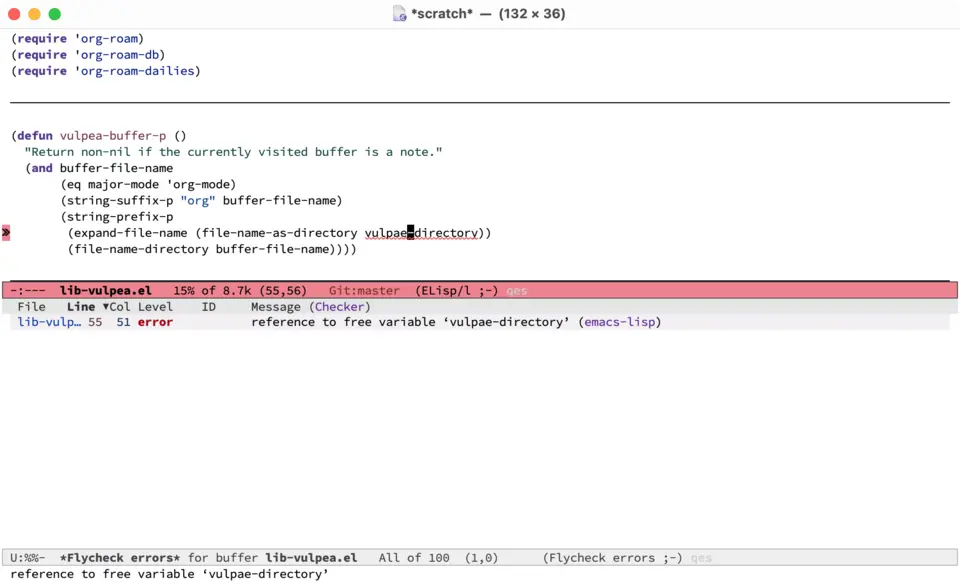
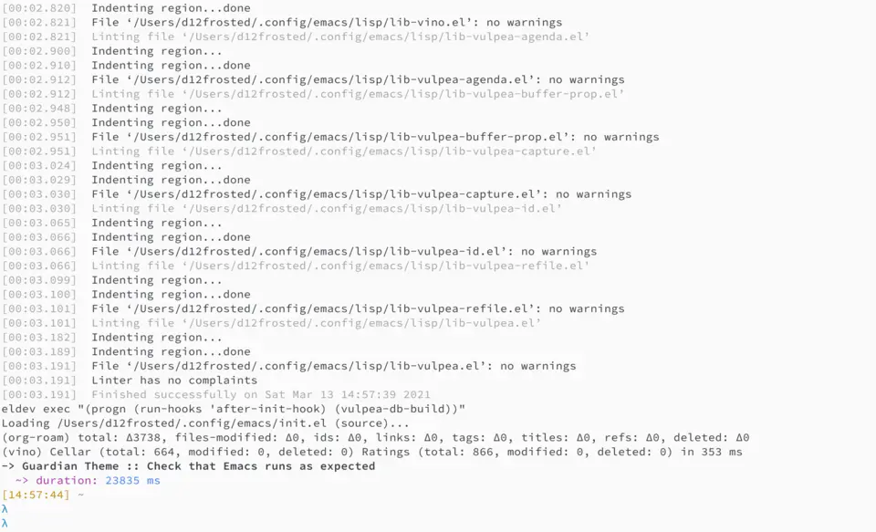

<!doctype html>
<html lang="en">
  <head>
    <meta charset="utf-8">
    <meta http-equiv="x-ua-compatible" content="ie=edge">
    <meta name="viewport" content="width=device-width, initial-scale=1, shrink-to-fit=no">
    <meta name="description" content="Boosting emacs.d development flow">
    <meta property="og:title" content="Boris Buliga - Towards future-safe emacs.d" />
    <meta property="og:description" content="Boosting emacs.d development flow" />
    <meta property="og:image" content="https://d12frosted.io/images/d12frosted.png" />
    <meta property="og:url" content="https://d12frosted.io/posts/2021-04-09-emacs-d.html" />
    <meta property="og:type" content="article" />
    <title>Boris Buliga - Towards future-safe emacs.d</title>
    <link rel="stylesheet" href="../css/default.css" />
    <link rel="stylesheet" href="../css/fonts.css" />
    <link rel="apple-touch-icon" sizes="180x180" href="../apple-touch-icon.png">
    <link rel="icon" type="image/png" sizes="32x32" href="../favicon-32x32.png">
    <link rel="icon" type="image/png" sizes="16x16" href="../favicon-16x16.png">
    <link rel="manifest" href="../site.webmanifest">

    <!-- <script defer src="/library/@fortawesome/fontawesome-free/js/solid.js"></script> -->
    <!-- <script defer src="/library/@fortawesome/fontawesome-free/js/brands.js"></script> -->

    <link href="../library/@fortawesome/fontawesome-free/css/fontawesome.min.css" rel="stylesheet">
    <link href="../library/@fortawesome/fontawesome-free/css/brands.min.css" rel="stylesheet">
    <link href="../library/@fortawesome/fontawesome-free/css/solid.min.css" rel="stylesheet">
    <link href="../library/@fortawesome/fontawesome-free/css/regular.min.css" rel="stylesheet">

    <script data-goatcounter="https://d12frosted.goatcounter.com/count" async src="//gc.zgo.at/count.js"></script>
  </head>
  <body>
    <header>
      <div class="logo">
        <a href="../">Boris Buliga</a>
      </div>
      <nav>
        <a href="../posts.html" title="Posts">
          <span class="fa-regular fa-file-lines fa-xs"></span>
          Posts
        </a>
        <a href="../projects.html" title="Projects">
          <span class="fa-solid fa-suitcase fa-xs"></span>
          Projects
        </a>
        <!-- <a href="/atom.xml" title="RSS"><span class="fa-solid fa-rss fa-xs"></span>RSS</a> -->
        <a href="https://github.com/d12frosted" title="GitHub">
          <span class="fa-brands fa-github fa-xs"></span>
          GitHub
        </a>
        <a href="https://barberry.io" title="Barberry Garden">
          <span class="fa-solid fa-wine-glass fa-xs"></span>
          Wine
        </a>
      </nav>
    </header>
    
    <main role="main">
      <article>
  <h1>Towards future-safe emacs.d</h1>
  <section class="subtitle">
    Posted on April  9, 2021
    
  </section>
  
  <section class="subtitle">
    Updated on July 20, 2022
  </section>
  
  
  <section class="subtitle">
    Tagged as <a title="All pages tagged 'emacs'." href="../tags/emacs.html">#emacs</a>
  </section>
  
  <section>
    <p><strong>TL;DR</strong> This post describes an approach to make byte compiler and various linters happy and <strong>useful</strong> in your <code class="verbatim">.emacs.d</code>, while maintaining startup performance, the ability to write embedded packages and test them. This is going to be a long post, so grab a bottle of wine, snacks and follow me. In case you lack these things, just take a look at results.</p>
<p>The longest project in my life is <a href="https://github.com/d12frosted/environment">environment</a>, it started with <a href="https://github.com/d12frosted/environment/tree/master/emacs">Emacs configurations</a> - personal frustration and my biggest time <del>waster</del> investment. I might be masochistic, but I never felt sorry for falling into this <del>trap</del> world. And boy, sometimes it is painful to maintain something in this ever-mutating and dynamic system.</p>
<p>There are various tools to help maintaining Emacs package, all fall into one of four categories - project management tools (e.g. <a href="https://cask.readthedocs.io/en/latest/">Cask</a>, <a href="https://github.com/doublep/eldev/">doublep/eldev</a>, <a href="https://github.com/alphapapa/makem.sh">alphapapa/makem.sh</a>), compiler (e.g. built-in byte compiler), linters (e.g. <a href="https://github.com/purcell/package-lint">purcell/package-lint</a>, <a href="https://github.com/mattiase/relint">mattiase/relint</a>, <a href="https://github.com/gonewest818/elisp-lint/">gonewest818/elisp-lint</a>, <a href="https://github.com/emacs-elsa/Elsa">emacs-elsa/Elsa</a>) and test frameworks (e.g. <a href="https://www.gnu.org/software/emacs/manual/html_node/ert/index.html">ERT</a>, <a href="https://github.com/jorgenschaefer/emacs-buttercup">jorgenschaefer/emacs-buttercup</a>). The tricky part comes when you want to use them for maintaining your own Emacs configurations, as they have different requirements compared to regular Emacs packages. At least in my case, they do.</p>
<p>First of all, I want Emacs to start as quickly as possible (e.g. in less than a second), meaning that I need to use tools like <code class="verbatim">use-package</code> for deferred loading. So I can’t <code class="verbatim">require</code> most of the packages directly except those that are used in the bootstrapping process. This easily makes compiler sad.</p>
<p>Secondly, I have lots of additional functions extending or combining functionality of one or more packages. But I hate to define them inside <code class="verbatim">use-packge</code> macro. Aside from aesthetics, I want to retain functionality of <code class="verbatim">xref-find-definitions</code>. Having definitions outside of <code class="verbatim">use-package</code> means that I will get many false byte compiler warnings and errors. Which is not helpful!</p>
<p>Thirdly, bootstrap process is different as project management tools isolate your package development from your Emacs configurations, which makes sense in general, but doesn’t make sense when you develop the aforementioned configurations.</p>
<p>The closest approach I know about is <a href="https://github.com/hlissner/doom-emacs">hlissner/doom-emacs</a>, but even there <code class="verbatim">.emacs.d</code> is <a href="https://github.com/hlissner/doom-emacs/blob/46dedb3e3361535052d199e994b641dca2c2cffd/modules/lang/emacs-lisp/config.el#L14">ignored</a> by compiler. Let me just quote a docstring from there:</p>
<blockquote>
<p>This checker (flycheck) tends to produce a lot of false positives in your .emacs.d and private config, so it is mostly useless there. However, special hacks are employed so that flycheck still does <strong>some</strong> helpful linting.</p>
</blockquote>
<p>But it’s Emacs, right? Everything is possible! So let’s find a way to make byte compiler and linters helpful and enable testing of Emacs configurations.</p>
<p></p>
<p></p>
<!--more-->

<p>Before we dive too much into details, let me describe the solution from higher level.</p>
<ul>
<li><a href="https://github.com/doublep/eldev/">doublep/eldev</a> is a project management tool because it’s powerful and extensible.</li>
<li><a href="https://github.com/raxod502/straight.el">raxod502/straight.el</a> is a package management tool because it’s consistent and reliable.</li>
<li><a href="https://github.com/jwiegley/use-package">jwiegley/use-package</a> is a package configuration tool with deferred loading because it’s easy to use and widely adopted.</li>
<li><a href="https://github.com/gonewest818/elisp-lint/">gonewest818/elisp-lint</a> is a linter because it aggregates many other linters.</li>
<li><a href="https://github.com/jorgenschaefer/emacs-buttercup">jorgenschaefer/emacs-buttercup</a> is a testing framework because it’s easy to use.</li>
</ul>
<p>The structure of my <code class="verbatim">.emacs.d</code> looks like this:</p>
<pre class="example"><code>.
├── Eldev
├── Makefile
├── README.org
├── early-init.el
├── init.el
├── lisp
│   ├── config-aaa.el
│   ├── config-bbb.el
│   ├── ...
│   ├── config-zzz.el
│   ├── init-autoloads.el
│   ├── init-elpa.el
│   ├── init-aaa.el
│   ├── init-bbb.el
│   ├── ...
│   ├── init-zzz.el
│   ├── lib-aaa.el
│   ├── lib-bbb.el
│   ├── ...
│   ├── lib-zzz.el
├── templates
│   ├── emacs-lisp-mode
│   │   ├── template_1
│   │   ├── ...
│   │   └── template_n
│   └── haskell-mode
│       ├── template_1
│       ├── ...
│       └── template_n
├── test
│   ├── lib-aaa-test.el
│   ├── lib-bbb-test.el
│   ├── ...
└── └── lib-zzz-test.el
</code></pre>
<p>As you can see, all lisp files are located inside of <code class="verbatim">lisp</code> directory (you should not put them on the same level as <code class="verbatim">init.el</code> file as that directory can’t be part of <code class="verbatim">load-path</code>), and all tests are located inside of <code class="verbatim">test</code> directory.</p>
<p>The following naming convention is used.</p>
<ul>
<li><code class="verbatim">init-xxx</code> is a file lazily initializing <code class="verbatim">xxx</code> feature, it can be a programming language (e.g. <code class="verbatim">init-haskell</code>) or a feature (e.g. <code class="verbatim">init-project</code>)
<ul>
<li>this is the only file type describing what packages to install, how to initialize and configure them;</li>
<li>it is safe to require these files, as they should defer any loading as much as possible;</li>
</ul></li>
<li><code class="verbatim">lib-xxx</code> is a file containing various utilities depending on packages defined in <code class="verbatim">init-xxx</code> file
<ul>
<li>these files are loaded via autoloads, and they should never be required directly;</li>
<li>these files can safely <code class="verbatim">require</code> any packages defined in <code class="verbatim">init-xxx</code> to help linter and byte compiler;</li>
<li>in some sense, <code class="verbatim">lib-xxx</code> are packages that are not distributed via MELPA, but rather located in <code class="verbatim">emacs.d</code> folder;</li>
<li>various extensions around <code class="verbatim">org-mode</code> called <code class="verbatim">vulpea</code> are good examples of <code class="verbatim">lib</code> files:
<ul>
<li><a href="https://github.com/d12frosted/environment/blob/6ffa964e77410b71058c3d1c43a2381a90bbc6aa/emacs/lisp/lib-vulpea-agenda.el">lib-vulpea-agenda.el</a></li>
<li><a href="https://github.com/d12frosted/environment/blob/6ffa964e77410b71058c3d1c43a2381a90bbc6aa/emacs/lisp/lib-vulpea-capture.el">lib-vulpea-capture.el</a></li>
<li><a href="https://github.com/d12frosted/environment/blob/6ffa964e77410b71058c3d1c43a2381a90bbc6aa/emacs/lisp/lib-vulpea-refile.el">lib-vulpea-refile.el</a></li>
<li><a href="https://github.com/d12frosted/environment/blob/6ffa964e77410b71058c3d1c43a2381a90bbc6aa/emacs/lisp/lib-vulpea-id.el">lib-vulpea-id.el</a></li>
<li><a href="https://github.com/d12frosted/environment/blob/6ffa964e77410b71058c3d1c43a2381a90bbc6aa/emacs/lisp/lib-vulpea.el">lib-vulpea.el</a></li>
</ul></li>
</ul></li>
<li><code class="verbatim">config-xxx</code> is a file containing variables and constants required by both <code class="verbatim">init-xxx</code> and <code class="verbatim">lib-xxx</code> files, allowing to avoid circular dependencies;
<ul>
<li>as they do not load any packages, it is safe to require this file from any other file;</li>
</ul></li>
</ul>
<p>The only exception from this convention is <code class="verbatim">init-autoloads.el</code> file containing autoloads. Name comes from <code class="verbatim">init.el</code> file.</p>
<h1 id="53fe1db8-2e30-4246-900b-ab5f11619419" id="content-of-early-init">Content of <code class="verbatim">early-init</code></h1>
<p>See <a href="https://www.gnu.org/software/emacs/manual/html_node/emacs/Early-Init-File.html">relevant section</a> in Emacs Help for more information on The Early Init File, introduced in Emacs 27.1. Basically, this file is great for frame customizations. In my case I love to disable as much clutter as possible:</p>
<div class="sourceCode" id="cb2" data-org-language="emacs-lisp"><pre class="sourceCode commonlisp"><code class="sourceCode commonlisp"><span id="cb2-1"><a href="#cb2-1" aria-hidden="true" tabindex="-1"></a>(add-to-list 'default-frame-alist '(tool-bar-lines . <span class="dv">0</span>))</span>
<span id="cb2-2"><a href="#cb2-2" aria-hidden="true" tabindex="-1"></a>(add-to-list 'default-frame-alist '(menu-bar-lines . <span class="dv">0</span>))</span>
<span id="cb2-3"><a href="#cb2-3" aria-hidden="true" tabindex="-1"></a>(add-to-list 'default-frame-alist '(vertical-scroll-bars))</span></code></pre></div>
<p>This file is totally optional, you can safely omit it in your setup. But if you have any frame customization, putting them in <code class="verbatim">early-init</code> file might speed up your Emacs and fix some visual clutter upon startup.</p>
<h1 id="2659cc52-6a45-40a7-bd43-402590983a6d" id="content-of-init.el">Content of <code class="verbatim">init.el</code></h1>
<p>The goal of this file is to <code class="verbatim">require</code> all <code class="verbatim">init-xxx</code> files. The structure is trivial:</p>
<ol type="1">
<li>Add <code class="verbatim">lisp</code> folder to <code class="verbatim">load-path</code>, so we can use <code class="verbatim">require</code>.</li>
<li>Adjust garbage collection thresholds, so things run smoother.</li>
<li>Load <code class="verbatim">config-path</code> declaring various path constants.</li>
<li>Load <code class="verbatim">init-elpa</code> which ‘bootstraps’ your package and configuration management tools.</li>
<li>Load autoloads file.</li>
<li>Load all other <code class="verbatim">init-xxx</code> files.</li>
<li>Load <code class="verbatim">custom-file</code>, even if you are not using <code class="verbatim">customize</code> interface, you need this to use <code class="verbatim">.dir-locals.el</code>.</li>
</ol>
<h2 id="27383777-1082-4df7-8a23-e6e9dcabe648" id="add-lisp-directory-to-load-path">Add <code class="verbatim">lisp</code> directory to <code class="verbatim">load-path</code></h2>
<div class="sourceCode" id="cb3" data-org-language="emacs-lisp"><pre class="sourceCode commonlisp"><code class="sourceCode commonlisp"><span id="cb3-1"><a href="#cb3-1" aria-hidden="true" tabindex="-1"></a><span class="co">;; Since we might be running in CI or other environments, stick to</span></span>
<span id="cb3-2"><a href="#cb3-2" aria-hidden="true" tabindex="-1"></a><span class="co">;; XDG_CONFIG_HOME value if possible.</span></span>
<span id="cb3-3"><a href="#cb3-3" aria-hidden="true" tabindex="-1"></a>(<span class="kw">let</span> ((emacs-home (if-let ((xdg (getenv <span class="st">&quot;XDG_CONFIG_HOME&quot;</span>)))</span>
<span id="cb3-4"><a href="#cb3-4" aria-hidden="true" tabindex="-1"></a>                      (expand-file-name <span class="st">&quot;emacs/&quot;</span> xdg)</span>
<span id="cb3-5"><a href="#cb3-5" aria-hidden="true" tabindex="-1"></a>                    user-emacs-directory)))</span>
<span id="cb3-6"><a href="#cb3-6" aria-hidden="true" tabindex="-1"></a>  <span class="co">;; Add Lisp directory to `load-path'.</span></span>
<span id="cb3-7"><a href="#cb3-7" aria-hidden="true" tabindex="-1"></a>  (add-to-list 'load-path (expand-file-name <span class="st">&quot;lisp&quot;</span> emacs-home)))</span></code></pre></div>
<h2 id="edb7fe75-93c2-41ec-be35-eb9abc3019ae" id="garbage-collection-thresholds">Garbage collection thresholds</h2>
<p>Garbage collection is a huge contributor to startup time. We temporarily increase this value to prevent garbage collection from running, then reset it to some big number in <code class="verbatim">emacs-startup-hook</code>. I discovered this trick thanks to <a href="https://github.com/hlissner/doom-emacs/">hlissner/doom-emacs</a>. But it is widely used by many people, for example <a href="https://github.com/purcell/emacs.d">purcell/emacs.d</a>.</p>
<p>In addition it is a good idea to use <a href="https://github.com/emacsmirror/gcmh">emacsmirror/gcmh</a> (aka Garbage Collector Magic Hack) to improve performance of interactive functions.</p>
<div class="sourceCode" id="cb4" data-org-language="emacs-lisp"><pre class="sourceCode commonlisp"><code class="sourceCode commonlisp"><span id="cb4-1"><a href="#cb4-1" aria-hidden="true" tabindex="-1"></a><span class="co">;; Adjust garbage collection thresholds during startup, and thereafter</span></span>
<span id="cb4-2"><a href="#cb4-2" aria-hidden="true" tabindex="-1"></a>(<span class="kw">let</span> ((normal-gc-cons-threshold (<span class="op">*</span> <span class="dv">20</span> <span class="dv">1024</span> <span class="dv">1024</span>))</span>
<span id="cb4-3"><a href="#cb4-3" aria-hidden="true" tabindex="-1"></a>      (init-gc-cons-threshold (<span class="op">*</span> <span class="dv">128</span> <span class="dv">1024</span> <span class="dv">1024</span>)))</span>
<span id="cb4-4"><a href="#cb4-4" aria-hidden="true" tabindex="-1"></a>  (<span class="kw">setq</span> gc-cons-threshold init-gc-cons-threshold)</span>
<span id="cb4-5"><a href="#cb4-5" aria-hidden="true" tabindex="-1"></a>  (add-hook 'emacs-startup-hook</span>
<span id="cb4-6"><a href="#cb4-6" aria-hidden="true" tabindex="-1"></a>            (<span class="kw">lambda</span> () (<span class="kw">setq</span> gc-cons-threshold</span>
<span id="cb4-7"><a href="#cb4-7" aria-hidden="true" tabindex="-1"></a>                             normal-gc-cons-threshold))))</span></code></pre></div>
<h2 id="aa075320-ba4b-4579-87a1-e32748f07ce6" id="bootstrap">Bootstrap</h2>
<div class="sourceCode" id="cb5" data-org-language="emacs-lisp"><pre class="sourceCode commonlisp"><code class="sourceCode commonlisp"><span id="cb5-1"><a href="#cb5-1" aria-hidden="true" tabindex="-1"></a>(<span class="kw">require</span> 'config-path)</span>
<span id="cb5-2"><a href="#cb5-2" aria-hidden="true" tabindex="-1"></a>(<span class="kw">require</span> 'init-elpa)</span></code></pre></div>
<p>Literally, that’s it. Checkout content of to find out how it works.</p>
<h2 id="f70f751b-627d-4443-8039-6d959220c9f0" id="setup-custom-file-location">Setup <code class="verbatim">custom-file</code> location</h2>
<p>Before we load anything, we should setup location of our <code class="verbatim">custom-file</code>, otherwise Emacs customization system will pollute our <code class="verbatim">init.el</code> file.</p>
<div class="sourceCode" id="cb6" data-org-language="emacs-lisp"><pre class="sourceCode commonlisp"><code class="sourceCode commonlisp"><span id="cb6-1"><a href="#cb6-1" aria-hidden="true" tabindex="-1"></a>(<span class="kw">setq</span> custom-file (concat path-local-dir <span class="st">&quot;custom.el&quot;</span>))</span></code></pre></div>
<p>The constant <code class="verbatim">path-local-dir</code> is defined in <code class="verbatim">config-path</code>:</p>
<div class="sourceCode" id="cb7" data-org-language="emacs-lisp"><pre class="sourceCode commonlisp"><code class="sourceCode commonlisp"><span id="cb7-1"><a href="#cb7-1" aria-hidden="true" tabindex="-1"></a>(defconst path-local-dir</span>
<span id="cb7-2"><a href="#cb7-2" aria-hidden="true" tabindex="-1"></a>  (concat</span>
<span id="cb7-3"><a href="#cb7-3" aria-hidden="true" tabindex="-1"></a>   (file-name-as-directory</span>
<span id="cb7-4"><a href="#cb7-4" aria-hidden="true" tabindex="-1"></a>    (<span class="kw">or</span> (getenv <span class="st">&quot;XDG_CACHE_HOME&quot;</span>)</span>
<span id="cb7-5"><a href="#cb7-5" aria-hidden="true" tabindex="-1"></a>        (concat path-home-dir <span class="st">&quot;.cache&quot;</span>)))</span>
<span id="cb7-6"><a href="#cb7-6" aria-hidden="true" tabindex="-1"></a>   <span class="st">&quot;emacs/&quot;</span>)</span>
<span id="cb7-7"><a href="#cb7-7" aria-hidden="true" tabindex="-1"></a>  <span class="st">&quot;The root directory for local Emacs files.</span></span>
<span id="cb7-8"><a href="#cb7-8" aria-hidden="true" tabindex="-1"></a></span>
<span id="cb7-9"><a href="#cb7-9" aria-hidden="true" tabindex="-1"></a><span class="st">Use this as permanent storage for files that are safe to share</span></span>
<span id="cb7-10"><a href="#cb7-10" aria-hidden="true" tabindex="-1"></a><span class="st">across systems.&quot;</span>)</span></code></pre></div>
<h2 id="2c1b997e-53f4-49a0-9c47-a6951c85e1d1" id="loading-autoloads">Loading autoloads</h2>
<div class="sourceCode" id="cb8" data-org-language="emacs-lisp"><pre class="sourceCode commonlisp"><code class="sourceCode commonlisp"><span id="cb8-1"><a href="#cb8-1" aria-hidden="true" tabindex="-1"></a><span class="co">;; load autoloads file</span></span>
<span id="cb8-2"><a href="#cb8-2" aria-hidden="true" tabindex="-1"></a>(<span class="kw">unless</span> elpa-bootstrap-p</span>
<span id="cb8-3"><a href="#cb8-3" aria-hidden="true" tabindex="-1"></a>  (<span class="kw">unless</span> (file-exists-p path-autoloads-file)</span>
<span id="cb8-4"><a href="#cb8-4" aria-hidden="true" tabindex="-1"></a>    (<span class="kw">error</span> <span class="st">&quot;Autoloads file doesn't exist, please run '%s'&quot;</span></span>
<span id="cb8-5"><a href="#cb8-5" aria-hidden="true" tabindex="-1"></a>           <span class="st">&quot;eru install emacs&quot;</span>))</span>
<span id="cb8-6"><a href="#cb8-6" aria-hidden="true" tabindex="-1"></a>  (<span class="kw">load</span> path-autoloads-file <span class="kw">nil</span> 'nomessage))</span></code></pre></div>
<p>The most important bit here is the last line, which loads file containing autoloads and errors out if it doesn’t exist. We want to load this file before any other modules to make autoloaded functions available there. But of course we can’t load this file during bootstrap process which generates this file.</p>
<h2 id="ab7c256d-0d24-48a0-9646-11a060cb9fb1" id="loading-other-init-files">Loading other init files</h2>
<p>Now comes the easy part, we just load all <code class="verbatim">init-xxx</code> files that we have.</p>
<div class="sourceCode" id="cb9" data-org-language="emacs-lisp"><pre class="sourceCode commonlisp"><code class="sourceCode commonlisp"><span id="cb9-1"><a href="#cb9-1" aria-hidden="true" tabindex="-1"></a><span class="co">;; core</span></span>
<span id="cb9-2"><a href="#cb9-2" aria-hidden="true" tabindex="-1"></a>(<span class="kw">require</span> 'init-env)</span>
<span id="cb9-3"><a href="#cb9-3" aria-hidden="true" tabindex="-1"></a>(<span class="kw">require</span> 'init-kbd)</span>
<span id="cb9-4"><a href="#cb9-4" aria-hidden="true" tabindex="-1"></a>(<span class="kw">require</span> 'init-editor)</span>
<span id="cb9-5"><a href="#cb9-5" aria-hidden="true" tabindex="-1"></a><span class="co">;; ...</span></span>
<span id="cb9-6"><a href="#cb9-6" aria-hidden="true" tabindex="-1"></a></span>
<span id="cb9-7"><a href="#cb9-7" aria-hidden="true" tabindex="-1"></a><span class="co">;; utilities</span></span>
<span id="cb9-8"><a href="#cb9-8" aria-hidden="true" tabindex="-1"></a>(<span class="kw">require</span> 'init-selection)</span>
<span id="cb9-9"><a href="#cb9-9" aria-hidden="true" tabindex="-1"></a>(<span class="kw">require</span> 'init-project)</span>
<span id="cb9-10"><a href="#cb9-10" aria-hidden="true" tabindex="-1"></a>(<span class="kw">require</span> 'init-vcs)</span>
<span id="cb9-11"><a href="#cb9-11" aria-hidden="true" tabindex="-1"></a>(<span class="kw">require</span> 'init-ide)</span>
<span id="cb9-12"><a href="#cb9-12" aria-hidden="true" tabindex="-1"></a>(<span class="kw">require</span> 'init-vulpea)</span>
<span id="cb9-13"><a href="#cb9-13" aria-hidden="true" tabindex="-1"></a>(<span class="kw">require</span> 'init-vino)</span>
<span id="cb9-14"><a href="#cb9-14" aria-hidden="true" tabindex="-1"></a>(<span class="kw">require</span> 'init-pdf)</span>
<span id="cb9-15"><a href="#cb9-15" aria-hidden="true" tabindex="-1"></a><span class="co">;; ...</span></span>
<span id="cb9-16"><a href="#cb9-16" aria-hidden="true" tabindex="-1"></a></span>
<span id="cb9-17"><a href="#cb9-17" aria-hidden="true" tabindex="-1"></a><span class="co">;; languages</span></span>
<span id="cb9-18"><a href="#cb9-18" aria-hidden="true" tabindex="-1"></a>(<span class="kw">require</span> 'init-elisp)</span>
<span id="cb9-19"><a href="#cb9-19" aria-hidden="true" tabindex="-1"></a>(<span class="kw">require</span> 'init-haskell)</span>
<span id="cb9-20"><a href="#cb9-20" aria-hidden="true" tabindex="-1"></a>(<span class="kw">require</span> 'init-sh)</span>
<span id="cb9-21"><a href="#cb9-21" aria-hidden="true" tabindex="-1"></a><span class="co">;; ...</span></span></code></pre></div>
<p>While this might sound stupid to manually load files that has clear naming pattern, I still like to do it manually, because it helps byte compiler, it has less footprint on runtime performance, the list is not big and I rarely add new files. Another option would be to generate this list during ‘compilation’, but again, I would love to avoid any unnecessary complications.</p>
<h2 id="d822a08d-117c-4b69-bcc1-e4b7d8d3aad4" id="loading-custom-file">Loading <code class="verbatim">custom-file</code></h2>
<p>And the last thing to do is to load <code class="verbatim">custom-file</code>:</p>
<div class="sourceCode" id="cb10" data-org-language="emacs-lisp"><pre class="sourceCode commonlisp"><code class="sourceCode commonlisp"><span id="cb10-1"><a href="#cb10-1" aria-hidden="true" tabindex="-1"></a><span class="co">;; I don't use `customize' interface, but .dir-locals.el put 'safe'</span></span>
<span id="cb10-2"><a href="#cb10-2" aria-hidden="true" tabindex="-1"></a><span class="co">;; variables into `custom-file'. And to be honest, I hate to allow</span></span>
<span id="cb10-3"><a href="#cb10-3" aria-hidden="true" tabindex="-1"></a><span class="co">;; them every time I restart Emacs.</span></span>
<span id="cb10-4"><a href="#cb10-4" aria-hidden="true" tabindex="-1"></a>(<span class="kw">when</span> (file-exists-p custom-file)</span>
<span id="cb10-5"><a href="#cb10-5" aria-hidden="true" tabindex="-1"></a>  (<span class="kw">load</span> custom-file <span class="kw">nil</span> 'nomessage))</span></code></pre></div>
<h1 id="5e97b74a-5113-4e83-b222-3b47a48b759d" id="content-of-init-elpa">Content of <code class="verbatim">init-elpa</code></h1>
<p>Part of our bootstrap process is setting up package management and package configuration tools, which is performed in <code class="verbatim">init-elpa</code> file.</p>
<h2 id="6c2ebb7c-cc1c-47fb-828c-cfee0922afad" id="bootstrap-straight.el">Bootstrap <code class="verbatim">straight.el</code></h2>
<p>The bootstrap process of <a href="https://github.com/raxod502/straight.el">raxod502/straight.el</a> is quire simple and well documented in the official repository. Additionally, we want to avoid any modification checks at startup by setting the value of <code class="verbatim">straight-check-for-modifications</code> to <code class="verbatim">nil</code>, so everything runs faster. Also we want to install packages by default in <code class="verbatim">use-package</code> forms. And then everything is straight-forward.</p>
<div class="sourceCode" id="cb11" data-org-language="emacs-lisp"><pre class="sourceCode commonlisp"><code class="sourceCode commonlisp"><span id="cb11-1"><a href="#cb11-1" aria-hidden="true" tabindex="-1"></a>(<span class="kw">require</span> 'config-path)</span>
<span id="cb11-2"><a href="#cb11-2" aria-hidden="true" tabindex="-1"></a></span>
<span id="cb11-3"><a href="#cb11-3" aria-hidden="true" tabindex="-1"></a>(setq-default</span>
<span id="cb11-4"><a href="#cb11-4" aria-hidden="true" tabindex="-1"></a> straight-repository-branch <span class="st">&quot;develop&quot;</span></span>
<span id="cb11-5"><a href="#cb11-5" aria-hidden="true" tabindex="-1"></a> straight-check-for-modifications <span class="kw">nil</span></span>
<span id="cb11-6"><a href="#cb11-6" aria-hidden="true" tabindex="-1"></a> straight-use-package-by-default <span class="kw">t</span></span>
<span id="cb11-7"><a href="#cb11-7" aria-hidden="true" tabindex="-1"></a> straight-base-dir path-packages-dir)</span>
<span id="cb11-8"><a href="#cb11-8" aria-hidden="true" tabindex="-1"></a></span>
<span id="cb11-9"><a href="#cb11-9" aria-hidden="true" tabindex="-1"></a>(<span class="kw">defvar</span><span class="fu"> bootstrap-version</span>)</span>
<span id="cb11-10"><a href="#cb11-10" aria-hidden="true" tabindex="-1"></a>(<span class="kw">let</span> ((bootstrap-file</span>
<span id="cb11-11"><a href="#cb11-11" aria-hidden="true" tabindex="-1"></a>       (expand-file-name <span class="st">&quot;straight/repos/straight.el/bootstrap.el&quot;</span></span>
<span id="cb11-12"><a href="#cb11-12" aria-hidden="true" tabindex="-1"></a>                         path-packages-dir))</span>
<span id="cb11-13"><a href="#cb11-13" aria-hidden="true" tabindex="-1"></a>      (bootstrap-version <span class="dv">5</span>))</span>
<span id="cb11-14"><a href="#cb11-14" aria-hidden="true" tabindex="-1"></a>  (<span class="kw">unless</span> (file-exists-p bootstrap-file)</span>
<span id="cb11-15"><a href="#cb11-15" aria-hidden="true" tabindex="-1"></a>    (with-current-buffer</span>
<span id="cb11-16"><a href="#cb11-16" aria-hidden="true" tabindex="-1"></a>        (url-retrieve-synchronously</span>
<span id="cb11-17"><a href="#cb11-17" aria-hidden="true" tabindex="-1"></a>         (concat <span class="st">&quot;https://raw.githubusercontent.com/&quot;</span></span>
<span id="cb11-18"><a href="#cb11-18" aria-hidden="true" tabindex="-1"></a>                 <span class="st">&quot;raxod502/straight.el/&quot;</span></span>
<span id="cb11-19"><a href="#cb11-19" aria-hidden="true" tabindex="-1"></a>                 <span class="st">&quot;develop/install.el&quot;</span>)</span>
<span id="cb11-20"><a href="#cb11-20" aria-hidden="true" tabindex="-1"></a>         'silent 'inhibit-cookies)</span>
<span id="cb11-21"><a href="#cb11-21" aria-hidden="true" tabindex="-1"></a>      (goto-char (point-max))</span>
<span id="cb11-22"><a href="#cb11-22" aria-hidden="true" tabindex="-1"></a>      (eval-print-last-sexp)))</span>
<span id="cb11-23"><a href="#cb11-23" aria-hidden="true" tabindex="-1"></a>  (<span class="kw">load</span> bootstrap-file <span class="kw">nil</span> 'nomessage))</span></code></pre></div>
<p>The only bit I am not describing here is how I configure <a href="../posts/2021-04-08-straight-el-retries.html">retries for networking operations</a>.</p>
<h2 id="35dbd099-0b08-4e9f-8efe-c76741dd1dba" id="setup-use-package">Setup <code class="verbatim">use-package</code></h2>
<p>Now it’s easy to setup <code class="verbatim">use-package</code>:</p>
<div class="sourceCode" id="cb12" data-org-language="emacs-lisp"><pre class="sourceCode commonlisp"><code class="sourceCode commonlisp"><span id="cb12-1"><a href="#cb12-1" aria-hidden="true" tabindex="-1"></a>(setq-default</span>
<span id="cb12-2"><a href="#cb12-2" aria-hidden="true" tabindex="-1"></a> use-package-enable-imenu-support <span class="kw">t</span>)</span>
<span id="cb12-3"><a href="#cb12-3" aria-hidden="true" tabindex="-1"></a>(straight-use-package 'use-package)</span></code></pre></div>
<h2 id="76c76a63-68b7-441d-9052-2aec30a89a3f" id="popular-packages">Popular packages</h2>
<p>There are packages (or rather libraries) that should be loaded eagerly because they are used extensively and they do not provide autoloads.</p>
<div class="sourceCode" id="cb13" data-org-language="emacs-lisp"><pre class="sourceCode commonlisp"><code class="sourceCode commonlisp"><span id="cb13-1"><a href="#cb13-1" aria-hidden="true" tabindex="-1"></a>(<span class="kw">use-package</span> s)</span>
<span id="cb13-2"><a href="#cb13-2" aria-hidden="true" tabindex="-1"></a>(<span class="kw">use-package</span> dash)</span></code></pre></div>
<h1 id="7e2d7e0d-2626-415b-9901-76d766325054" id="content-of-eldev">Content of Eldev</h1>
<p><code class="verbatim">Eldev</code> file defines our project. You can read more about this file in <a href="https://github.com/doublep/eldev/">doublep/eldev</a> repository.</p>
<h2 id="78d676d5-c0c0-4d06-ba55-011d7ccd5cf6" id="specify-project-files">Specify project files</h2>
<p>Eldev is quite powerful when it comes to fileset specification, but I find it not working properly with extra directories out of box. Since we can not place our lisp files in the same directory with <code class="verbatim">init.el</code> file, we configure <code class="verbatim">eldev-main-fileset</code> and add <code class="verbatim">lisp</code> folder to loading roots for certain commands.</p>
<div class="sourceCode" id="cb14" data-org-language="emacs-lisp"><pre class="sourceCode commonlisp"><code class="sourceCode commonlisp"><span id="cb14-1"><a href="#cb14-1" aria-hidden="true" tabindex="-1"></a>(<span class="kw">setf</span> eldev-project-main-file <span class="st">&quot;init.el&quot;</span></span>
<span id="cb14-2"><a href="#cb14-2" aria-hidden="true" tabindex="-1"></a>      eldev-main-fileset '(<span class="st">&quot;init.el&quot;</span></span>
<span id="cb14-3"><a href="#cb14-3" aria-hidden="true" tabindex="-1"></a>                           <span class="st">&quot;early-init.el&quot;</span></span>
<span id="cb14-4"><a href="#cb14-4" aria-hidden="true" tabindex="-1"></a>                           <span class="st">&quot;lisp/*.el&quot;</span>))</span>
<span id="cb14-5"><a href="#cb14-5" aria-hidden="true" tabindex="-1"></a></span>
<span id="cb14-6"><a href="#cb14-6" aria-hidden="true" tabindex="-1"></a><span class="co">;; Emacs doesn't allow to add directory containing init.el to load</span></span>
<span id="cb14-7"><a href="#cb14-7" aria-hidden="true" tabindex="-1"></a><span class="co">;; path, so we have to put other Emacs Lisp files in directory. Help</span></span>
<span id="cb14-8"><a href="#cb14-8" aria-hidden="true" tabindex="-1"></a><span class="co">;; Eldev commands to locate them.</span></span>
<span id="cb14-9"><a href="#cb14-9" aria-hidden="true" tabindex="-1"></a>(eldev-add-loading-roots 'build <span class="st">&quot;lisp&quot;</span>)</span>
<span id="cb14-10"><a href="#cb14-10" aria-hidden="true" tabindex="-1"></a>(eldev-add-loading-roots 'bootstrap <span class="st">&quot;lisp&quot;</span>)</span></code></pre></div>
<h2 id="29c1ffaa-4ea0-40c7-a6a9-07a063c20437" id="use-melpa">Use MELPA</h2>
<p>We are going to use certain 3rd party packages for project management (e.g. testing and linting), so we must tell Eldev where to load them from. This part is a little bit confusing as Eldev will install packages from MELPA and for our configurations we are going to use <code class="verbatim">straight.el</code>. But Eldev isolates these packages in it’s working dir and they will not interfere with our configurations. Ugly, but safe.</p>
<div class="sourceCode" id="cb15" data-org-language="emacs-lisp"><pre class="sourceCode commonlisp"><code class="sourceCode commonlisp"><span id="cb15-1"><a href="#cb15-1" aria-hidden="true" tabindex="-1"></a><span class="co">;; There are dependencies for testing and linting phases, they should</span></span>
<span id="cb15-2"><a href="#cb15-2" aria-hidden="true" tabindex="-1"></a><span class="co">;; be installed by Eldev from MELPA and GNU ELPA (latter is enabled by</span></span>
<span id="cb15-3"><a href="#cb15-3" aria-hidden="true" tabindex="-1"></a><span class="co">;; default).</span></span>
<span id="cb15-4"><a href="#cb15-4" aria-hidden="true" tabindex="-1"></a>(eldev-use-package-archive 'melpa)</span></code></pre></div>
<h2 id="1bd1ef33-0a70-4aba-8e35-22271105d8b7" id="define-bootstrap-command">Define bootstrap command</h2>
<p>Bootstrapping Emacs is simple, we just need to load <code class="verbatim">init.el</code> file.</p>
<div class="sourceCode" id="cb16" data-org-language="emacs-lisp"><pre class="sourceCode commonlisp"><code class="sourceCode commonlisp"><span id="cb16-1"><a href="#cb16-1" aria-hidden="true" tabindex="-1"></a>(<span class="kw">defun</span><span class="fu"> elpa-bootstrap </span>()</span>
<span id="cb16-2"><a href="#cb16-2" aria-hidden="true" tabindex="-1"></a>  <span class="st">&quot;Bootstrap personal configurations.&quot;</span></span>
<span id="cb16-3"><a href="#cb16-3" aria-hidden="true" tabindex="-1"></a>  (setq-default</span>
<span id="cb16-4"><a href="#cb16-4" aria-hidden="true" tabindex="-1"></a>   elpa-bootstrap-p <span class="kw">t</span></span>
<span id="cb16-5"><a href="#cb16-5" aria-hidden="true" tabindex="-1"></a>   load-prefer-newer <span class="kw">t</span>)</span>
<span id="cb16-6"><a href="#cb16-6" aria-hidden="true" tabindex="-1"></a>  (eldev--inject-loading-roots 'bootstrap)</span>
<span id="cb16-7"><a href="#cb16-7" aria-hidden="true" tabindex="-1"></a>  (<span class="kw">require</span> 'config-path)</span>
<span id="cb16-8"><a href="#cb16-8" aria-hidden="true" tabindex="-1"></a>  (<span class="kw">load</span> (expand-file-name <span class="st">&quot;init.el&quot;</span> path-emacs-dir)))</span>
<span id="cb16-9"><a href="#cb16-9" aria-hidden="true" tabindex="-1"></a></span>
<span id="cb16-10"><a href="#cb16-10" aria-hidden="true" tabindex="-1"></a><span class="co">;; We want to run this before any build command. This is also needed</span></span>
<span id="cb16-11"><a href="#cb16-11" aria-hidden="true" tabindex="-1"></a><span class="co">;; for `flyspell-eldev` to be aware of packages installed via</span></span>
<span id="cb16-12"><a href="#cb16-12" aria-hidden="true" tabindex="-1"></a><span class="co">;; straight.el.</span></span>
<span id="cb16-13"><a href="#cb16-13" aria-hidden="true" tabindex="-1"></a>(add-hook 'eldev-build-system-hook #'elpa-bootstrap)</span></code></pre></div>
<p>We set the value of <code class="verbatim">elpa-bootstrap-p</code> to <code class="verbatim">t</code>, so that autoloads file is not required from <code class="verbatim">init.el</code> (we are going to generate it during bootstrap flow). We also set <code class="verbatim">load-prefer-newer</code> to <code class="verbatim">t</code> so that Emacs prefers newer files instead of byte compiled (again, we are going to compile <code class="verbatim">.el</code> to <code class="verbatim">.elc</code>).</p>
<p>We hook this function into any build command in order to install packages and
get proper <code class="verbatim">load-path</code> in all phases.</p>
<h2 id="de2caf6f-9ef3-47b4-a484-98835a26ccef" id="define-upgrade-command">Define upgrade command</h2>
<p>Upgrade flow is simple and uses <code class="verbatim">straight.el</code> functionality, because we use it to manage packages.</p>
<div class="sourceCode" id="cb17" data-org-language="emacs-lisp"><pre class="sourceCode commonlisp"><code class="sourceCode commonlisp"><span id="cb17-1"><a href="#cb17-1" aria-hidden="true" tabindex="-1"></a>(<span class="kw">defun</span><span class="fu"> elpa-upgrade </span>()</span>
<span id="cb17-2"><a href="#cb17-2" aria-hidden="true" tabindex="-1"></a>  <span class="st">&quot;Bootstrap personal configurations.&quot;</span></span>
<span id="cb17-3"><a href="#cb17-3" aria-hidden="true" tabindex="-1"></a>  <span class="co">;; make sure that bootstrap has completed</span></span>
<span id="cb17-4"><a href="#cb17-4" aria-hidden="true" tabindex="-1"></a>  (elpa-bootstrap)</span>
<span id="cb17-5"><a href="#cb17-5" aria-hidden="true" tabindex="-1"></a></span>
<span id="cb17-6"><a href="#cb17-6" aria-hidden="true" tabindex="-1"></a>  <span class="co">;;  fetch all packages and then merge the latest version</span></span>
<span id="cb17-7"><a href="#cb17-7" aria-hidden="true" tabindex="-1"></a>  (straight-fetch-all)</span>
<span id="cb17-8"><a href="#cb17-8" aria-hidden="true" tabindex="-1"></a>  (straight-merge-all)</span>
<span id="cb17-9"><a href="#cb17-9" aria-hidden="true" tabindex="-1"></a></span>
<span id="cb17-10"><a href="#cb17-10" aria-hidden="true" tabindex="-1"></a>  <span class="co">;; in case we pinned some versions, revert any unneccessary merge</span></span>
<span id="cb17-11"><a href="#cb17-11" aria-hidden="true" tabindex="-1"></a>  (straight-thaw-versions)</span>
<span id="cb17-12"><a href="#cb17-12" aria-hidden="true" tabindex="-1"></a></span>
<span id="cb17-13"><a href="#cb17-13" aria-hidden="true" tabindex="-1"></a>  <span class="co">;; rebuild updated packages</span></span>
<span id="cb17-14"><a href="#cb17-14" aria-hidden="true" tabindex="-1"></a>  (<span class="kw">delete-file</span> (concat path-packages-dir <span class="st">&quot;straight/build-cache.el&quot;</span>))</span>
<span id="cb17-15"><a href="#cb17-15" aria-hidden="true" tabindex="-1"></a>  (delete-directory (concat path-packages-dir <span class="st">&quot;straight/build&quot;</span>) 'recursive)</span>
<span id="cb17-16"><a href="#cb17-16" aria-hidden="true" tabindex="-1"></a>  (straight-check-all))</span>
<span id="cb17-17"><a href="#cb17-17" aria-hidden="true" tabindex="-1"></a></span>
<span id="cb17-18"><a href="#cb17-18" aria-hidden="true" tabindex="-1"></a>(add-hook 'eldev-upgrade-hook #'elpa-upgrade)</span></code></pre></div>
<h2 id="e16b007c-c50f-4339-99bc-a611d9b36160" id="define-autoloads-plugin">Define autoloads plugin</h2>
<p>Now is the most dirty part - autoloads generation. Eldev provides a plugin for autoloads generation, but unfortunately it works only with root directory, but we need to generate our autoloads for files in <code class="verbatim">lisp</code> directory. So we write our own plugin.</p>
<div class="sourceCode" id="cb18" data-org-language="emacs-lisp"><pre class="sourceCode commonlisp"><code class="sourceCode commonlisp"><span id="cb18-1"><a href="#cb18-1" aria-hidden="true" tabindex="-1"></a><span class="co">;; We want to generate autoloads file. This line simply loads few</span></span>
<span id="cb18-2"><a href="#cb18-2" aria-hidden="true" tabindex="-1"></a><span class="co">;; helpers.</span></span>
<span id="cb18-3"><a href="#cb18-3" aria-hidden="true" tabindex="-1"></a>(eldev-use-plugin 'autoloads)</span>
<span id="cb18-4"><a href="#cb18-4" aria-hidden="true" tabindex="-1"></a></span>
<span id="cb18-5"><a href="#cb18-5" aria-hidden="true" tabindex="-1"></a><span class="co">;; Eldev doesn't traverse extra loading roots, so we have to modify</span></span>
<span id="cb18-6"><a href="#cb18-6" aria-hidden="true" tabindex="-1"></a><span class="co">;; autoloads plugin a little bit. Basically, this modification</span></span>
<span id="cb18-7"><a href="#cb18-7" aria-hidden="true" tabindex="-1"></a><span class="co">;; achieves specific goal - generate autoloads from files located in</span></span>
<span id="cb18-8"><a href="#cb18-8" aria-hidden="true" tabindex="-1"></a><span class="co">;; Lisp directory.</span></span>
<span id="cb18-9"><a href="#cb18-9" aria-hidden="true" tabindex="-1"></a>(eldev-defbuilder eldev-builder-autoloads (sources target)</span>
<span id="cb18-10"><a href="#cb18-10" aria-hidden="true" tabindex="-1"></a>  <span class="bu">:type</span>           many-to-one</span>
<span id="cb18-11"><a href="#cb18-11" aria-hidden="true" tabindex="-1"></a>  :short-name     <span class="st">&quot;AUTOLOADS&quot;</span></span>
<span id="cb18-12"><a href="#cb18-12" aria-hidden="true" tabindex="-1"></a>  :message        target</span>
<span id="cb18-13"><a href="#cb18-13" aria-hidden="true" tabindex="-1"></a>  :source-files   (:and <span class="st">&quot;lisp/*.el&quot;</span> (:not (<span class="st">&quot;lisp/*autoloads.el&quot;</span>)))</span>
<span id="cb18-14"><a href="#cb18-14" aria-hidden="true" tabindex="-1"></a>  :targets        (<span class="kw">lambda</span> (_sources) <span class="st">&quot;lisp/init-autoloads.el&quot;</span>)</span>
<span id="cb18-15"><a href="#cb18-15" aria-hidden="true" tabindex="-1"></a>  :define-cleaner (eldev-cleaner-autoloads</span>
<span id="cb18-16"><a href="#cb18-16" aria-hidden="true" tabindex="-1"></a>                   <span class="st">&quot;Delete the generated package autoloads files.&quot;</span></span>
<span id="cb18-17"><a href="#cb18-17" aria-hidden="true" tabindex="-1"></a>                   <span class="bu">:default</span> <span class="kw">t</span>)</span>
<span id="cb18-18"><a href="#cb18-18" aria-hidden="true" tabindex="-1"></a>  :collect        (<span class="st">&quot;:autoloads&quot;</span>)</span>
<span id="cb18-19"><a href="#cb18-19" aria-hidden="true" tabindex="-1"></a>  <span class="co">;; To make sure that `update-directory-autoloads' doesn't grab files it shouldn't,</span></span>
<span id="cb18-20"><a href="#cb18-20" aria-hidden="true" tabindex="-1"></a>  <span class="co">;; override `directory-files' temporarily.</span></span>
<span id="cb18-21"><a href="#cb18-21" aria-hidden="true" tabindex="-1"></a>  (eldev-advised (#'directory-files</span>
<span id="cb18-22"><a href="#cb18-22" aria-hidden="true" tabindex="-1"></a>                  :around</span>
<span id="cb18-23"><a href="#cb18-23" aria-hidden="true" tabindex="-1"></a>                  (<span class="kw">lambda</span> (original <span class="kw">directory</span> &amp;<span class="kw">rest</span> arguments)</span>
<span id="cb18-24"><a href="#cb18-24" aria-hidden="true" tabindex="-1"></a>                    (<span class="kw">let</span> ((files (<span class="kw">apply</span> original <span class="kw">directory</span> arguments)))</span>
<span id="cb18-25"><a href="#cb18-25" aria-hidden="true" tabindex="-1"></a>                      (<span class="kw">if</span> (file-equal-p <span class="kw">directory</span> eldev-project-dir)</span>
<span id="cb18-26"><a href="#cb18-26" aria-hidden="true" tabindex="-1"></a>                          (<span class="kw">let</span> (filtered)</span>
<span id="cb18-27"><a href="#cb18-27" aria-hidden="true" tabindex="-1"></a>                            (<span class="kw">dolist</span> (file files)</span>
<span id="cb18-28"><a href="#cb18-28" aria-hidden="true" tabindex="-1"></a>                              (<span class="kw">when</span> (eldev-any-p (file-equal-p file it) sources)</span>
<span id="cb18-29"><a href="#cb18-29" aria-hidden="true" tabindex="-1"></a>                                (<span class="kw">push</span> file filtered)))</span>
<span id="cb18-30"><a href="#cb18-30" aria-hidden="true" tabindex="-1"></a>                            (<span class="kw">nreverse</span> filtered))</span>
<span id="cb18-31"><a href="#cb18-31" aria-hidden="true" tabindex="-1"></a>                        files))))</span>
<span id="cb18-32"><a href="#cb18-32" aria-hidden="true" tabindex="-1"></a>    (<span class="kw">let</span> ((inhibit-message   <span class="kw">t</span>)</span>
<span id="cb18-33"><a href="#cb18-33" aria-hidden="true" tabindex="-1"></a>          (make-backup-files <span class="kw">nil</span>)</span>
<span id="cb18-34"><a href="#cb18-34" aria-hidden="true" tabindex="-1"></a>          (pkg-dir (expand-file-name <span class="st">&quot;lisp/&quot;</span> eldev-project-dir)))</span>
<span id="cb18-35"><a href="#cb18-35" aria-hidden="true" tabindex="-1"></a>      (package-generate-autoloads (package-desc-name (eldev-package-descriptor)) pkg-dir)</span>
<span id="cb18-36"><a href="#cb18-36" aria-hidden="true" tabindex="-1"></a>      <span class="co">;; Always load the generated file.  Maybe there are cases when we don't need that,</span></span>
<span id="cb18-37"><a href="#cb18-37" aria-hidden="true" tabindex="-1"></a>      <span class="co">;; but most of the time we do.</span></span>
<span id="cb18-38"><a href="#cb18-38" aria-hidden="true" tabindex="-1"></a>      (eldev--load-autoloads-file (expand-file-name target eldev-project-dir)))))</span>
<span id="cb18-39"><a href="#cb18-39" aria-hidden="true" tabindex="-1"></a></span>
<span id="cb18-40"><a href="#cb18-40" aria-hidden="true" tabindex="-1"></a><span class="co">;; Always load autoloads file.</span></span>
<span id="cb18-41"><a href="#cb18-41" aria-hidden="true" tabindex="-1"></a>(add-hook</span>
<span id="cb18-42"><a href="#cb18-42" aria-hidden="true" tabindex="-1"></a> 'eldev-build-system-hook</span>
<span id="cb18-43"><a href="#cb18-43" aria-hidden="true" tabindex="-1"></a> (<span class="kw">lambda</span> ()</span>
<span id="cb18-44"><a href="#cb18-44" aria-hidden="true" tabindex="-1"></a>   (eldev--load-autoloads-file</span>
<span id="cb18-45"><a href="#cb18-45" aria-hidden="true" tabindex="-1"></a>    (expand-file-name <span class="st">&quot;lisp/init-autoloads.el&quot;</span> eldev-project-dir))))</span></code></pre></div>
<h2 id="3bb9a10a-614c-4c55-8a92-c9b8235d4e0e" id="linting-configuration">Linting configuration</h2>
<p>And again, we need to tell Eldev which files to lint.</p>
<div class="sourceCode" id="cb19" data-org-language="emacs-lisp"><pre class="sourceCode commonlisp"><code class="sourceCode commonlisp"><span id="cb19-1"><a href="#cb19-1" aria-hidden="true" tabindex="-1"></a>(<span class="kw">defun</span><span class="fu"> eldev-lint-find-files-absolute </span>(f &amp;<span class="kw">rest</span> args)</span>
<span id="cb19-2"><a href="#cb19-2" aria-hidden="true" tabindex="-1"></a>  <span class="st">&quot;Call F with ARGS and ensure that result is absolute paths.&quot;</span></span>
<span id="cb19-3"><a href="#cb19-3" aria-hidden="true" tabindex="-1"></a>  (seq-map (<span class="kw">lambda</span> (p)</span>
<span id="cb19-4"><a href="#cb19-4" aria-hidden="true" tabindex="-1"></a>             (expand-file-name p eldev-project-dir))</span>
<span id="cb19-5"><a href="#cb19-5" aria-hidden="true" tabindex="-1"></a>           (seq-filter (<span class="kw">lambda</span> (p)</span>
<span id="cb19-6"><a href="#cb19-6" aria-hidden="true" tabindex="-1"></a>                         (<span class="kw">not</span> (string-suffix-p <span class="st">&quot;autoloads.el&quot;</span> p)))</span>
<span id="cb19-7"><a href="#cb19-7" aria-hidden="true" tabindex="-1"></a>                       (<span class="kw">apply</span> f args))))</span>
<span id="cb19-8"><a href="#cb19-8" aria-hidden="true" tabindex="-1"></a></span>
<span id="cb19-9"><a href="#cb19-9" aria-hidden="true" tabindex="-1"></a>(advice-add 'eldev-lint-find-files :around #'eldev-lint-find-files-absolute)</span></code></pre></div>
<p>Then we ask Eldev to use <a href="https://github.com/gonewest818/elisp-lint/">gonewest818/elisp-lint</a> for linting and configure it a little bit.</p>
<div class="sourceCode" id="cb20" data-org-language="emacs-lisp"><pre class="sourceCode commonlisp"><code class="sourceCode commonlisp"><span id="cb20-1"><a href="#cb20-1" aria-hidden="true" tabindex="-1"></a><span class="co">;; Use elisp-lint by default</span></span>
<span id="cb20-2"><a href="#cb20-2" aria-hidden="true" tabindex="-1"></a>(<span class="kw">setf</span> eldev-lint-default '(elisp))</span>
<span id="cb20-3"><a href="#cb20-3" aria-hidden="true" tabindex="-1"></a>(with-eval-after-load 'elisp-lint</span>
<span id="cb20-4"><a href="#cb20-4" aria-hidden="true" tabindex="-1"></a>  (<span class="kw">setf</span> elisp-lint-ignored-validators '(<span class="st">&quot;byte-compile&quot;</span>)))</span>
<span id="cb20-5"><a href="#cb20-5" aria-hidden="true" tabindex="-1"></a></span>
<span id="cb20-6"><a href="#cb20-6" aria-hidden="true" tabindex="-1"></a><span class="co">;; Tell checkdoc not to demand two spaces after a period.</span></span>
<span id="cb20-7"><a href="#cb20-7" aria-hidden="true" tabindex="-1"></a>(<span class="kw">setq</span> sentence-end-double-space <span class="kw">nil</span>)</span></code></pre></div>
<p>What I love about <a href="https://github.com/gonewest818/elisp-lint/">gonewest818/elisp-lint</a> is that it combines multiple linters, including <a href="https://github.com/purcell/package-lint">purcell/package-lint</a>. While <code class="verbatim">package-lint</code> is a useful linter, it enforces naming convention which I don’t agree with when it comes to Emacs configurations. E.g. it wants every function in <code class="verbatim">lib-vulpea.el</code> to have a prefix <code class="verbatim">lib-vulpea</code>. While in general it makes sense, I want to avoid <code class="verbatim">lib</code> part here. The same goes for <code class="verbatim">init</code> and <code class="verbatim">config</code> stuff. So we intrusively change that rule:</p>
<div class="sourceCode" id="cb21" data-org-language="emacs-lisp"><pre class="sourceCode commonlisp"><code class="sourceCode commonlisp"><span id="cb21-1"><a href="#cb21-1" aria-hidden="true" tabindex="-1"></a><span class="co">;; In general, `package-lint' is useful. But package prefix naming</span></span>
<span id="cb21-2"><a href="#cb21-2" aria-hidden="true" tabindex="-1"></a><span class="co">;; policy is not useful for personal configurations. So we chop</span></span>
<span id="cb21-3"><a href="#cb21-3" aria-hidden="true" tabindex="-1"></a><span class="co">;; lib/init part from the package name.</span></span>
<span id="cb21-4"><a href="#cb21-4" aria-hidden="true" tabindex="-1"></a><span class="co">;;</span></span>
<span id="cb21-5"><a href="#cb21-5" aria-hidden="true" tabindex="-1"></a><span class="co">;; And `eval-after-load'. In general it's not a good idea to use it in</span></span>
<span id="cb21-6"><a href="#cb21-6" aria-hidden="true" tabindex="-1"></a><span class="co">;; packages, but these are configurations.</span></span>
<span id="cb21-7"><a href="#cb21-7" aria-hidden="true" tabindex="-1"></a>(with-eval-after-load 'package-lint</span>
<span id="cb21-8"><a href="#cb21-8" aria-hidden="true" tabindex="-1"></a>  (<span class="kw">defun</span><span class="fu"> package-lint--package-prefix-cleanup </span>(f &amp;<span class="kw">rest</span> args)</span>
<span id="cb21-9"><a href="#cb21-9" aria-hidden="true" tabindex="-1"></a>    <span class="st">&quot;Call F with ARGS and cleanup it's result.&quot;</span></span>
<span id="cb21-10"><a href="#cb21-10" aria-hidden="true" tabindex="-1"></a>    (<span class="kw">let</span> ((r (<span class="kw">apply</span> f args)))</span>
<span id="cb21-11"><a href="#cb21-11" aria-hidden="true" tabindex="-1"></a>      (replace-regexp-in-string <span class="st">&quot;</span><span class="sc">\\</span><span class="st">(init</span><span class="sc">\\</span><span class="st">|lib</span><span class="sc">\\</span><span class="st">|config</span><span class="sc">\\</span><span class="st">|compat</span><span class="sc">\\</span><span class="st">)-?&quot;</span> <span class="st">&quot;&quot;</span> r)))</span>
<span id="cb21-12"><a href="#cb21-12" aria-hidden="true" tabindex="-1"></a>  (advice-add 'package-lint--get-package-prefix :around #'package-lint--package-prefix-cleanup)</span>
<span id="cb21-13"><a href="#cb21-13" aria-hidden="true" tabindex="-1"></a></span>
<span id="cb21-14"><a href="#cb21-14" aria-hidden="true" tabindex="-1"></a>  (<span class="kw">defun</span><span class="fu"> package-lint--check-eval-after-load </span>()</span>
<span id="cb21-15"><a href="#cb21-15" aria-hidden="true" tabindex="-1"></a>    <span class="st">&quot;Do nothing.&quot;</span>))</span></code></pre></div>
<p>We also need <code class="verbatim">eval-after-load</code>, so let’s just noop. It makes sense to discourage usage of <code class="verbatim">eval-after-load</code> in packages, but in Emacs configurations it doesn’t make sense.</p>
<p>And the last bit is <code class="verbatim">emacsql</code>. I use <code class="verbatim">emacsql-fix-vector-indentation</code> to format my SQL statements, and I want linter to be happy about it:</p>
<div class="sourceCode" id="cb22" data-org-language="emacs-lisp"><pre class="sourceCode commonlisp"><code class="sourceCode commonlisp"><span id="cb22-1"><a href="#cb22-1" aria-hidden="true" tabindex="-1"></a><span class="co">;; Teach linter how to properly indent emacsql vectors.</span></span>
<span id="cb22-2"><a href="#cb22-2" aria-hidden="true" tabindex="-1"></a>(eldev-add-extra-dependencies 'lint 'emacsql)</span>
<span id="cb22-3"><a href="#cb22-3" aria-hidden="true" tabindex="-1"></a>(add-hook 'eldev-lint-hook</span>
<span id="cb22-4"><a href="#cb22-4" aria-hidden="true" tabindex="-1"></a>          (<span class="kw">lambda</span> ()</span>
<span id="cb22-5"><a href="#cb22-5" aria-hidden="true" tabindex="-1"></a>            (eldev-load-project-dependencies 'lint <span class="kw">nil</span> <span class="kw">t</span>)</span>
<span id="cb22-6"><a href="#cb22-6" aria-hidden="true" tabindex="-1"></a>            (<span class="kw">require</span> 'emacsql)</span>
<span id="cb22-7"><a href="#cb22-7" aria-hidden="true" tabindex="-1"></a>            (call-interactively #'emacsql-fix-vector-indentation)))</span></code></pre></div>
<h1 id="8edf7419-494c-4061-8606-cb9222925f25" id="autoloads">autoloads</h1>
<p>Now that everything is configured, we can use <code class="verbatim">eldev</code> to bootstrap, compile, lint and test our configurations. The first thing we do is autoloads generation, which is as simple as</p>
<div class="sourceCode" id="cb23"><pre class="sourceCode bash"><code class="sourceCode bash"><span id="cb23-1"><a href="#cb23-1" aria-hidden="true" tabindex="-1"></a><span class="ex">$</span> eldev build :autoloads</span></code></pre></div>
<p>Though I prefer to clean autoloads before generating new ones.</p>
<div class="sourceCode" id="cb24"><pre class="sourceCode bash"><code class="sourceCode bash"><span id="cb24-1"><a href="#cb24-1" aria-hidden="true" tabindex="-1"></a><span class="ex">$</span> eldev clean autoloads</span>
<span id="cb24-2"><a href="#cb24-2" aria-hidden="true" tabindex="-1"></a><span class="ex">$</span> eldev build :autoloads</span></code></pre></div>
<p>This generates <code class="verbatim">lisp/init-autoloads.el</code> file. And in case you were wondering bout its content, then it looks like this:</p>
<div class="sourceCode" id="cb25" data-org-language="emacs-lisp"><pre class="sourceCode commonlisp"><code class="sourceCode commonlisp"><span id="cb25-1"><a href="#cb25-1" aria-hidden="true" tabindex="-1"></a><span class="co">;;; init-autoloads.el --- automatically extracted autoloads  -*- lexical-binding: t -*-</span></span>
<span id="cb25-2"><a href="#cb25-2" aria-hidden="true" tabindex="-1"></a><span class="co">;;</span></span>
<span id="cb25-3"><a href="#cb25-3" aria-hidden="true" tabindex="-1"></a><span class="co">;;; Code:</span></span>
<span id="cb25-4"><a href="#cb25-4" aria-hidden="true" tabindex="-1"></a></span>
<span id="cb25-5"><a href="#cb25-5" aria-hidden="true" tabindex="-1"></a>(add-to-list 'load-path (directory-file-name</span>
<span id="cb25-6"><a href="#cb25-6" aria-hidden="true" tabindex="-1"></a>                         (<span class="kw">or</span> (file-name-directory #$) (<span class="kw">car</span> load-path))))</span>
<span id="cb25-7"><a href="#cb25-7" aria-hidden="true" tabindex="-1"></a></span>
<span id="cb25-8"><a href="#cb25-8" aria-hidden="true" tabindex="-1"></a></span>
<span id="cb25-9"><a href="#cb25-9" aria-hidden="true" tabindex="-1"></a><span class="co">;;;</span><span class="al">###</span><span class="co"> (autoloads nil &quot;config-path&quot; &quot;config-path.el&quot; (0 0 0 0))</span></span>
<span id="cb25-10"><a href="#cb25-10" aria-hidden="true" tabindex="-1"></a><span class="co">;;; Generated autoloads from config-path.el</span></span>
<span id="cb25-11"><a href="#cb25-11" aria-hidden="true" tabindex="-1"></a></span>
<span id="cb25-12"><a href="#cb25-12" aria-hidden="true" tabindex="-1"></a>(register-definition-prefixes <span class="st">&quot;config-path&quot;</span> '(<span class="st">&quot;path-&quot;</span>))</span>
<span id="cb25-13"><a href="#cb25-13" aria-hidden="true" tabindex="-1"></a></span>
<span id="cb25-14"><a href="#cb25-14" aria-hidden="true" tabindex="-1"></a><span class="co">;;;***</span></span>
<span id="cb25-15"><a href="#cb25-15" aria-hidden="true" tabindex="-1"></a></span>
<span id="cb25-16"><a href="#cb25-16" aria-hidden="true" tabindex="-1"></a><span class="co">;;; ...</span></span>
<span id="cb25-17"><a href="#cb25-17" aria-hidden="true" tabindex="-1"></a><span class="co">;;; ...</span></span>
<span id="cb25-18"><a href="#cb25-18" aria-hidden="true" tabindex="-1"></a><span class="co">;;; ...</span></span>
<span id="cb25-19"><a href="#cb25-19" aria-hidden="true" tabindex="-1"></a></span>
<span id="cb25-20"><a href="#cb25-20" aria-hidden="true" tabindex="-1"></a><span class="co">;;;</span><span class="al">###</span><span class="co"> (autoloads nil &quot;lib-buffer&quot; &quot;lib-buffer.el&quot; (0 0 0 0))</span></span>
<span id="cb25-21"><a href="#cb25-21" aria-hidden="true" tabindex="-1"></a><span class="co">;;; Generated autoloads from lib-buffer.el</span></span>
<span id="cb25-22"><a href="#cb25-22" aria-hidden="true" tabindex="-1"></a></span>
<span id="cb25-23"><a href="#cb25-23" aria-hidden="true" tabindex="-1"></a>(autoload 'buffer-lines <span class="st">&quot;lib-buffer&quot;</span> <span class="st">&quot;\</span></span>
<span id="cb25-24"><a href="#cb25-24" aria-hidden="true" tabindex="-1"></a><span class="st">Return lines of BUFFER-OR-NAME.</span></span>
<span id="cb25-25"><a href="#cb25-25" aria-hidden="true" tabindex="-1"></a></span>
<span id="cb25-26"><a href="#cb25-26" aria-hidden="true" tabindex="-1"></a><span class="st">Each line is a string with properties. Trailing newline character</span></span>
<span id="cb25-27"><a href="#cb25-27" aria-hidden="true" tabindex="-1"></a><span class="st">is not present.</span></span>
<span id="cb25-28"><a href="#cb25-28" aria-hidden="true" tabindex="-1"></a></span>
<span id="cb25-29"><a href="#cb25-29" aria-hidden="true" tabindex="-1"></a><span class="st">\(fn BUFFER-OR-NAME)&quot;</span> <span class="kw">nil</span> <span class="kw">nil</span>)</span>
<span id="cb25-30"><a href="#cb25-30" aria-hidden="true" tabindex="-1"></a></span>
<span id="cb25-31"><a href="#cb25-31" aria-hidden="true" tabindex="-1"></a>(autoload 'buffer-lines-map <span class="st">&quot;lib-buffer&quot;</span> <span class="st">&quot;\</span></span>
<span id="cb25-32"><a href="#cb25-32" aria-hidden="true" tabindex="-1"></a><span class="st">Call FN on each line of BUFFER-OR-NAME and return resulting list.</span></span>
<span id="cb25-33"><a href="#cb25-33" aria-hidden="true" tabindex="-1"></a></span>
<span id="cb25-34"><a href="#cb25-34" aria-hidden="true" tabindex="-1"></a><span class="st">As opposed to `buffer-lines-each', this function accumulates</span></span>
<span id="cb25-35"><a href="#cb25-35" aria-hidden="true" tabindex="-1"></a><span class="st">result.</span></span>
<span id="cb25-36"><a href="#cb25-36" aria-hidden="true" tabindex="-1"></a></span>
<span id="cb25-37"><a href="#cb25-37" aria-hidden="true" tabindex="-1"></a><span class="st">Each line is a string with properties. Trailing newline character</span></span>
<span id="cb25-38"><a href="#cb25-38" aria-hidden="true" tabindex="-1"></a><span class="st">is not present.</span></span>
<span id="cb25-39"><a href="#cb25-39" aria-hidden="true" tabindex="-1"></a></span>
<span id="cb25-40"><a href="#cb25-40" aria-hidden="true" tabindex="-1"></a><span class="st">\(fn BUFFER-OR-NAME FN)&quot;</span> <span class="kw">nil</span> <span class="kw">nil</span>)</span>
<span id="cb25-41"><a href="#cb25-41" aria-hidden="true" tabindex="-1"></a></span>
<span id="cb25-42"><a href="#cb25-42" aria-hidden="true" tabindex="-1"></a>(function-put 'buffer-lines-map 'lisp-indent-function '<span class="dv">1</span>)</span>
<span id="cb25-43"><a href="#cb25-43" aria-hidden="true" tabindex="-1"></a></span>
<span id="cb25-44"><a href="#cb25-44" aria-hidden="true" tabindex="-1"></a><span class="co">;; ...</span></span>
<span id="cb25-45"><a href="#cb25-45" aria-hidden="true" tabindex="-1"></a><span class="co">;; ...</span></span>
<span id="cb25-46"><a href="#cb25-46" aria-hidden="true" tabindex="-1"></a><span class="co">;; ...</span></span>
<span id="cb25-47"><a href="#cb25-47" aria-hidden="true" tabindex="-1"></a></span>
<span id="cb25-48"><a href="#cb25-48" aria-hidden="true" tabindex="-1"></a><span class="co">;;;***</span></span>
<span id="cb25-49"><a href="#cb25-49" aria-hidden="true" tabindex="-1"></a></span>
<span id="cb25-50"><a href="#cb25-50" aria-hidden="true" tabindex="-1"></a><span class="co">;;;</span><span class="al">###</span><span class="co"> (autoloads nil &quot;lib-vulpea-agenda&quot; &quot;lib-vulpea-agenda.el&quot;</span></span>
<span id="cb25-51"><a href="#cb25-51" aria-hidden="true" tabindex="-1"></a><span class="co">;;;;;;  (0 0 0 0))</span></span>
<span id="cb25-52"><a href="#cb25-52" aria-hidden="true" tabindex="-1"></a><span class="co">;;; Generated autoloads from lib-vulpea-agenda.el</span></span>
<span id="cb25-53"><a href="#cb25-53" aria-hidden="true" tabindex="-1"></a></span>
<span id="cb25-54"><a href="#cb25-54" aria-hidden="true" tabindex="-1"></a>(autoload 'vulpea-agenda-main <span class="st">&quot;lib-vulpea-agenda&quot;</span> <span class="st">&quot;\</span></span>
<span id="cb25-55"><a href="#cb25-55" aria-hidden="true" tabindex="-1"></a><span class="st">Show main `org-agenda' view.&quot;</span> <span class="kw">t</span> <span class="kw">nil</span>)</span>
<span id="cb25-56"><a href="#cb25-56" aria-hidden="true" tabindex="-1"></a></span>
<span id="cb25-57"><a href="#cb25-57" aria-hidden="true" tabindex="-1"></a>(autoload 'vulpea-agenda-person <span class="st">&quot;lib-vulpea-agenda&quot;</span> <span class="st">&quot;\</span></span>
<span id="cb25-58"><a href="#cb25-58" aria-hidden="true" tabindex="-1"></a><span class="st">Show main `org-agenda' view.&quot;</span> <span class="kw">t</span> <span class="kw">nil</span>)</span>
<span id="cb25-59"><a href="#cb25-59" aria-hidden="true" tabindex="-1"></a></span>
<span id="cb25-60"><a href="#cb25-60" aria-hidden="true" tabindex="-1"></a>(defconst vulpea-agenda-cmd-refile '(tags <span class="st">&quot;REFILE&quot;</span> ((org-agenda-overriding-header <span class="st">&quot;To refile&quot;</span>) (org-tags-match-list-sublevels <span class="kw">nil</span>))))</span>
<span id="cb25-61"><a href="#cb25-61" aria-hidden="true" tabindex="-1"></a></span>
<span id="cb25-62"><a href="#cb25-62" aria-hidden="true" tabindex="-1"></a>(defconst vulpea-agenda-cmd-today '(agenda <span class="st">&quot;&quot;</span> ((org-agenda-span 'day) (org-agenda-skip-deadline-prewarning-if-scheduled <span class="kw">t</span>) (org-agenda-sorting-strategy '(habit-down time-up category-keep todo-state-down priority-down)))))</span>
<span id="cb25-63"><a href="#cb25-63" aria-hidden="true" tabindex="-1"></a></span>
<span id="cb25-64"><a href="#cb25-64" aria-hidden="true" tabindex="-1"></a><span class="co">;;; ...</span></span>
<span id="cb25-65"><a href="#cb25-65" aria-hidden="true" tabindex="-1"></a><span class="co">;;; ...</span></span>
<span id="cb25-66"><a href="#cb25-66" aria-hidden="true" tabindex="-1"></a><span class="co">;;; ...</span></span>
<span id="cb25-67"><a href="#cb25-67" aria-hidden="true" tabindex="-1"></a></span>
<span id="cb25-68"><a href="#cb25-68" aria-hidden="true" tabindex="-1"></a><span class="co">;;;***</span></span>
<span id="cb25-69"><a href="#cb25-69" aria-hidden="true" tabindex="-1"></a></span>
<span id="cb25-70"><a href="#cb25-70" aria-hidden="true" tabindex="-1"></a><span class="co">;; Local Variables:</span></span>
<span id="cb25-71"><a href="#cb25-71" aria-hidden="true" tabindex="-1"></a><span class="co">;; version-control: never</span></span>
<span id="cb25-72"><a href="#cb25-72" aria-hidden="true" tabindex="-1"></a><span class="co">;; no-byte-compile: t</span></span>
<span id="cb25-73"><a href="#cb25-73" aria-hidden="true" tabindex="-1"></a><span class="co">;; no-update-autoloads: t</span></span>
<span id="cb25-74"><a href="#cb25-74" aria-hidden="true" tabindex="-1"></a><span class="co">;; coding: utf-8</span></span>
<span id="cb25-75"><a href="#cb25-75" aria-hidden="true" tabindex="-1"></a><span class="co">;; End:</span></span>
<span id="cb25-76"><a href="#cb25-76" aria-hidden="true" tabindex="-1"></a><span class="co">;;; init-autoloads.el ends here</span></span></code></pre></div>
<p>As you can see, it uses <code class="verbatim">autoload</code> to define a symbol (function or variable) and where to load it from. It also sets up indentation based on <code class="verbatim">decalre</code> from the body of function. And all constants are embedded as is, they are not getting autoloaded.</p>
<p>Please note that <code class="verbatim">eldev</code> commands need to be run with working directory pointing to the directory containing <code class="verbatim">Eldev</code> file, e.g. from <code class="verbatim">$XDG_CONFIG_HOME/emacs</code> or <code class="verbatim">$HOME/.config/emacs</code>.</p>
<h1 id="ec70ddb2-e024-4408-bd7a-01db920d7e82" id="compiling">Compiling</h1>
<p>The second operation in the bootstrap process is byte compilation. It is said that byte compiled lisp executes <a href="https://www.gnu.org/software/emacs/manual/html_node/elisp/Speed-of-Byte_002dCode.html">faster</a>, but there is also an experimental branch for native compilation called <a href="https://akrl.sdf.org/gccemacs.html">gccemacs</a>, which is also available via <a href="https://github.com/d12frosted/homebrew-emacs-plus/#gccemacs">emacs-plus</a>. Another aspect of byte compilation is… well <a href="https://www.gnu.org/software/emacs/manual/html_node/elisp/Compilation-Functions.html">compilation</a> which produces valuable <a href="https://www.gnu.org/software/emacs/manual/html_node/elisp/Compiler-Errors.html">warnings and errors</a>. In our setup it is very easy to compile all our <code class="verbatim">.el</code> files.</p>
<div class="sourceCode" id="cb26"><pre class="sourceCode bash"><code class="sourceCode bash"><span id="cb26-1"><a href="#cb26-1" aria-hidden="true" tabindex="-1"></a><span class="ex">$</span> eldev clean elc</span>
<span id="cb26-2"><a href="#cb26-2" aria-hidden="true" tabindex="-1"></a><span class="ex">$</span> eldev compile</span></code></pre></div>
<p>That’s it.</p>
<h1 id="43c74208-5253-4d31-b1af-09f3f97ba4c9" id="linting">Linting</h1>
<p>The third step of the bootstrap process is linting. Once everything compiles we just need to check what linter has to say. Just to remind, we are using <a href="https://github.com/gonewest818/elisp-lint/">gonewest818/elisp-lint</a>. As you might already figured, with Eldev this step as trivial as</p>
<div class="sourceCode" id="cb27"><pre class="sourceCode bash"><code class="sourceCode bash"><span id="cb27-1"><a href="#cb27-1" aria-hidden="true" tabindex="-1"></a><span class="ex">$</span> eldev lint</span></code></pre></div>
<h1 id="29f90a3d-232a-4085-984b-68984fc1b4a8" id="testing">Testing</h1>
<p>And the last step of the bootstrap process is testing, which has two steps. First we simply load our configurations and make sure that nothing errors out and then we run test cases, for which we are using <a href="https://github.com/jorgenschaefer/emacs-buttercup">jorgenschaefer/emacs-buttercup</a> test framework. Interaction with eldev is trivial, again.</p>
<div class="sourceCode" id="cb28" data-org-language="emacs-lisp"><pre class="sourceCode commonlisp"><code class="sourceCode commonlisp"><span id="cb28-1"><a href="#cb28-1" aria-hidden="true" tabindex="-1"></a>$ eldev exec <span class="kw">t</span></span>
<span id="cb28-2"><a href="#cb28-2" aria-hidden="true" tabindex="-1"></a>$ eldev test</span></code></pre></div>
<p>Example of the test:</p>
<div class="sourceCode" id="cb29" data-org-language="emacs-lisp"><pre class="sourceCode commonlisp"><code class="sourceCode commonlisp"><span id="cb29-1"><a href="#cb29-1" aria-hidden="true" tabindex="-1"></a>(<span class="kw">require</span> 'buttercup)</span>
<span id="cb29-2"><a href="#cb29-2" aria-hidden="true" tabindex="-1"></a></span>
<span id="cb29-3"><a href="#cb29-3" aria-hidden="true" tabindex="-1"></a>(<span class="kw">describe</span> <span class="st">&quot;buffer-content&quot;</span></span>
<span id="cb29-4"><a href="#cb29-4" aria-hidden="true" tabindex="-1"></a>  (it <span class="st">&quot;returns an empty string in empty buffer&quot;</span></span>
<span id="cb29-5"><a href="#cb29-5" aria-hidden="true" tabindex="-1"></a>    (<span class="kw">let*</span> ((current-buffer (current-buffer))</span>
<span id="cb29-6"><a href="#cb29-6" aria-hidden="true" tabindex="-1"></a>           (buffer (generate-new-buffer <span class="st">&quot;test-buffer&quot;</span>))</span>
<span id="cb29-7"><a href="#cb29-7" aria-hidden="true" tabindex="-1"></a>           (name (buffer-name buffer)))</span>
<span id="cb29-8"><a href="#cb29-8" aria-hidden="true" tabindex="-1"></a>      <span class="co">;; we can get content of the buffer by name</span></span>
<span id="cb29-9"><a href="#cb29-9" aria-hidden="true" tabindex="-1"></a>      (expect (buffer-content name) :to-equal <span class="st">&quot;&quot;</span>)</span>
<span id="cb29-10"><a href="#cb29-10" aria-hidden="true" tabindex="-1"></a></span>
<span id="cb29-11"><a href="#cb29-11" aria-hidden="true" tabindex="-1"></a>      <span class="co">;; we can get content of the buffer by object</span></span>
<span id="cb29-12"><a href="#cb29-12" aria-hidden="true" tabindex="-1"></a>      (expect (buffer-content buffer) :to-equal <span class="st">&quot;&quot;</span>)</span>
<span id="cb29-13"><a href="#cb29-13" aria-hidden="true" tabindex="-1"></a></span>
<span id="cb29-14"><a href="#cb29-14" aria-hidden="true" tabindex="-1"></a>      <span class="co">;; current buffer is not modified</span></span>
<span id="cb29-15"><a href="#cb29-15" aria-hidden="true" tabindex="-1"></a>      (expect (current-buffer) :to-equal current-buffer)))</span>
<span id="cb29-16"><a href="#cb29-16" aria-hidden="true" tabindex="-1"></a></span>
<span id="cb29-17"><a href="#cb29-17" aria-hidden="true" tabindex="-1"></a>  (it <span class="st">&quot;returns content of non-empty buffer&quot;</span></span>
<span id="cb29-18"><a href="#cb29-18" aria-hidden="true" tabindex="-1"></a>    (<span class="kw">let*</span> ((current-buffer (current-buffer))</span>
<span id="cb29-19"><a href="#cb29-19" aria-hidden="true" tabindex="-1"></a>           (buffer (generate-new-buffer <span class="st">&quot;test-buffer&quot;</span>))</span>
<span id="cb29-20"><a href="#cb29-20" aria-hidden="true" tabindex="-1"></a>           (name (buffer-name buffer))</span>
<span id="cb29-21"><a href="#cb29-21" aria-hidden="true" tabindex="-1"></a>           (expected <span class="st">&quot;hello</span><span class="sc">\n</span><span class="st">my dear</span><span class="sc">\n</span><span class="st">frodo</span><span class="sc">\n</span><span class="st">&quot;</span>))</span>
<span id="cb29-22"><a href="#cb29-22" aria-hidden="true" tabindex="-1"></a>      (with-current-buffer buffer</span>
<span id="cb29-23"><a href="#cb29-23" aria-hidden="true" tabindex="-1"></a>        (insert expected))</span>
<span id="cb29-24"><a href="#cb29-24" aria-hidden="true" tabindex="-1"></a></span>
<span id="cb29-25"><a href="#cb29-25" aria-hidden="true" tabindex="-1"></a>      <span class="co">;; we can get content of the buffer by name</span></span>
<span id="cb29-26"><a href="#cb29-26" aria-hidden="true" tabindex="-1"></a>      (expect (buffer-content name) :to-equal expected)</span>
<span id="cb29-27"><a href="#cb29-27" aria-hidden="true" tabindex="-1"></a></span>
<span id="cb29-28"><a href="#cb29-28" aria-hidden="true" tabindex="-1"></a>      <span class="co">;; we can get content of the buffer by object</span></span>
<span id="cb29-29"><a href="#cb29-29" aria-hidden="true" tabindex="-1"></a>      (expect (buffer-content buffer) :to-equal expected)</span>
<span id="cb29-30"><a href="#cb29-30" aria-hidden="true" tabindex="-1"></a></span>
<span id="cb29-31"><a href="#cb29-31" aria-hidden="true" tabindex="-1"></a>      <span class="co">;; current buffer is not modified</span></span>
<span id="cb29-32"><a href="#cb29-32" aria-hidden="true" tabindex="-1"></a>      (expect (current-buffer) :to-equal current-buffer))))</span></code></pre></div>
<p>And the output of testing might look like this:</p>
<pre class="example"><code>Running 2 specs.

buffer-content
  returns an empty string in empty buffer (27.47ms)
  returns content of non-empty buffer (0.38ms)

Ran 2 specs, 0 failed, in 37.85ms.
</code></pre>
<h1 id="28cc71cc-136d-429f-b25d-48fd613ba244" id="upgrading">Upgrading</h1>
<p>Since we explicitly defined an upgrade command in Eldev, we can execute it as any other command:</p>
<div class="sourceCode" id="cb31"><pre class="sourceCode bash"><code class="sourceCode bash"><span id="cb31-1"><a href="#cb31-1" aria-hidden="true" tabindex="-1"></a><span class="ex">$</span> eldev upgrade</span></code></pre></div>
<h1 id="60396cd4-9109-4a8a-9f6a-1016fc900fdf" id="makefile">Makefile</h1>
<p>Since certain operations consist of two steps (e.g. clean followed by build) and I also want to always pass extra arguments to <code class="verbatim">eldev</code> for verbosity and debuggability, I have a <code class="verbatim">Makefile</code> with all available commands.</p>
<div class="sourceCode" id="cb32"><pre class="sourceCode makefile"><code class="sourceCode makefile"><span id="cb32-1"><a href="#cb32-1" aria-hidden="true" tabindex="-1"></a><span class="ot">.PHONY:</span><span class="dt"> clean</span></span>
<span id="cb32-2"><a href="#cb32-2" aria-hidden="true" tabindex="-1"></a><span class="dv">clean:</span></span>
<span id="cb32-3"><a href="#cb32-3" aria-hidden="true" tabindex="-1"></a>  eldev clean all</span>
<span id="cb32-4"><a href="#cb32-4" aria-hidden="true" tabindex="-1"></a></span>
<span id="cb32-5"><a href="#cb32-5" aria-hidden="true" tabindex="-1"></a><span class="ot">.PHONY:</span><span class="dt"> bootstrap</span></span>
<span id="cb32-6"><a href="#cb32-6" aria-hidden="true" tabindex="-1"></a><span class="dv">bootstrap:</span></span>
<span id="cb32-7"><a href="#cb32-7" aria-hidden="true" tabindex="-1"></a>  eldev clean autoloads</span>
<span id="cb32-8"><a href="#cb32-8" aria-hidden="true" tabindex="-1"></a>  eldev -C --unstable -a -dtT build :autoloads</span>
<span id="cb32-9"><a href="#cb32-9" aria-hidden="true" tabindex="-1"></a></span>
<span id="cb32-10"><a href="#cb32-10" aria-hidden="true" tabindex="-1"></a><span class="ot">.PHONY:</span><span class="dt"> upgrade</span></span>
<span id="cb32-11"><a href="#cb32-11" aria-hidden="true" tabindex="-1"></a><span class="dv">upgrade:</span></span>
<span id="cb32-12"><a href="#cb32-12" aria-hidden="true" tabindex="-1"></a>  eldev -C --unstable -a -dtT upgrade</span>
<span id="cb32-13"><a href="#cb32-13" aria-hidden="true" tabindex="-1"></a></span>
<span id="cb32-14"><a href="#cb32-14" aria-hidden="true" tabindex="-1"></a><span class="ot">.PHONY:</span><span class="dt"> compile</span></span>
<span id="cb32-15"><a href="#cb32-15" aria-hidden="true" tabindex="-1"></a><span class="dv">compile:</span></span>
<span id="cb32-16"><a href="#cb32-16" aria-hidden="true" tabindex="-1"></a>  eldev clean elc</span>
<span id="cb32-17"><a href="#cb32-17" aria-hidden="true" tabindex="-1"></a>  eldev -C --unstable -a -dtT compile</span>
<span id="cb32-18"><a href="#cb32-18" aria-hidden="true" tabindex="-1"></a></span>
<span id="cb32-19"><a href="#cb32-19" aria-hidden="true" tabindex="-1"></a><span class="ot">.PHONY:</span><span class="dt"> lint</span></span>
<span id="cb32-20"><a href="#cb32-20" aria-hidden="true" tabindex="-1"></a><span class="dv">lint:</span></span>
<span id="cb32-21"><a href="#cb32-21" aria-hidden="true" tabindex="-1"></a>  eldev -C --unstable -a -dtT lint</span>
<span id="cb32-22"><a href="#cb32-22" aria-hidden="true" tabindex="-1"></a></span>
<span id="cb32-23"><a href="#cb32-23" aria-hidden="true" tabindex="-1"></a><span class="ot">.PHONY:</span><span class="dt"> test</span></span>
<span id="cb32-24"><a href="#cb32-24" aria-hidden="true" tabindex="-1"></a><span class="dv">test:</span></span>
<span id="cb32-25"><a href="#cb32-25" aria-hidden="true" tabindex="-1"></a>  eldev exec t</span>
<span id="cb32-26"><a href="#cb32-26" aria-hidden="true" tabindex="-1"></a>  eldev -C --unstable -a -dtT test</span></code></pre></div>
<h1 id="e451afdb-0c27-4ec5-85e2-bfe2048fb9a9" id="org-roam">org-roam</h1>
<p>In addition, I love to build <a href="https://github.com/org-roam/org-roam/">org-roam</a> and <a href="https://github.com/d12frosted/vino">vino</a> databases during bootstrap process, so I don’t spend time on this when I use Emacs. For this I have defined the following function in my <code class="verbatim">lib-vulpea</code> file.</p>
<div class="sourceCode" id="cb33" data-org-language="emacs-lisp"><pre class="sourceCode commonlisp"><code class="sourceCode commonlisp"><span id="cb33-1"><a href="#cb33-1" aria-hidden="true" tabindex="-1"></a><span class="co">;;;###autoload</span></span>
<span id="cb33-2"><a href="#cb33-2" aria-hidden="true" tabindex="-1"></a>(<span class="kw">defun</span><span class="fu"> vulpea-db-build </span>()</span>
<span id="cb33-3"><a href="#cb33-3" aria-hidden="true" tabindex="-1"></a>  <span class="st">&quot;Update notes database.&quot;</span></span>
<span id="cb33-4"><a href="#cb33-4" aria-hidden="true" tabindex="-1"></a>  (<span class="kw">when</span> (file-directory-p vulpea-directory)</span>
<span id="cb33-5"><a href="#cb33-5" aria-hidden="true" tabindex="-1"></a>    (org-roam-db-build-cache)))</span></code></pre></div>
<p>Now we can evaluate this function from command line via <code class="verbatim">eldev</code>:</p>
<div class="sourceCode" id="cb34"><pre class="sourceCode bash"><code class="sourceCode bash"><span id="cb34-1"><a href="#cb34-1" aria-hidden="true" tabindex="-1"></a><span class="ex">$</span> eldev exec <span class="st">&quot;(vulpea-db-build)&quot;</span></span></code></pre></div>
<p>If you are using <a href="https://github.com/d12frosted/vino">vino</a>, then <code class="verbatim">vulpea-db-build</code> also triggers vino database update, but since it <code class="verbatim">vino-setup</code> happens in <code class="verbatim">after-init-hook</code>, we need to run it before executing <code class="verbatim">vulpea-db-build</code>.</p>
<div class="sourceCode" id="cb35" data-org-language="emacs-lisp"><pre class="sourceCode commonlisp"><code class="sourceCode commonlisp"><span id="cb35-1"><a href="#cb35-1" aria-hidden="true" tabindex="-1"></a>(<span class="kw">use-package</span> vino</span>
<span id="cb35-2"><a href="#cb35-2" aria-hidden="true" tabindex="-1"></a>  <span class="co">;; unrelated code</span></span>
<span id="cb35-3"><a href="#cb35-3" aria-hidden="true" tabindex="-1"></a>  :hook ((after-init . vino-setup))</span>
<span id="cb35-4"><a href="#cb35-4" aria-hidden="true" tabindex="-1"></a>  <span class="co">;; unrelated code</span></span>
<span id="cb35-5"><a href="#cb35-5" aria-hidden="true" tabindex="-1"></a>  )</span></code></pre></div>
<p>So we change our <code class="verbatim">eldev</code> command a little bit.</p>
<div class="sourceCode" id="cb36"><pre class="sourceCode bash"><code class="sourceCode bash"><span id="cb36-1"><a href="#cb36-1" aria-hidden="true" tabindex="-1"></a><span class="ex">$</span> eldev exec <span class="st">&quot;(progn (run-hooks 'after-init-hook) (vulpea-db-build))&quot;</span></span></code></pre></div>
<p>And we can put that into <code class="verbatim">Makefile</code>.</p>
<div class="sourceCode" id="cb37"><pre class="sourceCode makefile"><code class="sourceCode makefile"><span id="cb37-1"><a href="#cb37-1" aria-hidden="true" tabindex="-1"></a><span class="ot">.PHONY:</span><span class="dt"> roam</span></span>
<span id="cb37-2"><a href="#cb37-2" aria-hidden="true" tabindex="-1"></a><span class="dv">roam:</span></span>
<span id="cb37-3"><a href="#cb37-3" aria-hidden="true" tabindex="-1"></a>  eldev exec <span class="st">&quot;(progn (run-hooks 'after-init-hook) (vulpea-db-build))&quot;</span></span></code></pre></div>
<h1 id="89fc2dd2-ee46-4dad-a8fc-c6442b4935e1" id="eru">eru</h1>
<p>And the last yet optional bit of the whole puzzle is <a href="https://github.com/d12frosted/environment#eru-domain">Eru</a>, a script I use to setup and maintain my environment. I have it in my <code class="verbatim">PATH</code>, so I can rely on its might whenever I am. In short, I have the following commands:</p>
<div class="sourceCode" id="cb38"><pre class="sourceCode bash"><code class="sourceCode bash"><span id="cb38-1"><a href="#cb38-1" aria-hidden="true" tabindex="-1"></a><span class="ex">$</span> eru install emacs <span class="co"># autoloads, compile, lint, roam</span></span>
<span id="cb38-2"><a href="#cb38-2" aria-hidden="true" tabindex="-1"></a><span class="ex">$</span> eru upgrade emacs</span>
<span id="cb38-3"><a href="#cb38-3" aria-hidden="true" tabindex="-1"></a><span class="ex">$</span> eru test emacs</span></code></pre></div>
<p>Since Eru is a beast, you might not want to use it, but the core idea here is
that you can create an executable that will glue all things together for you.</p>
<div class="sourceCode" id="cb39"><pre class="sourceCode bash"><code class="sourceCode bash"><span id="cb39-1"><a href="#cb39-1" aria-hidden="true" tabindex="-1"></a><span class="co">#!/usr/bin/env bash</span></span>
<span id="cb39-2"><a href="#cb39-2" aria-hidden="true" tabindex="-1"></a></span>
<span id="cb39-3"><a href="#cb39-3" aria-hidden="true" tabindex="-1"></a><span class="bu">set</span> <span class="at">-e</span></span>
<span id="cb39-4"><a href="#cb39-4" aria-hidden="true" tabindex="-1"></a></span>
<span id="cb39-5"><a href="#cb39-5" aria-hidden="true" tabindex="-1"></a><span class="va">ACTION</span><span class="op">=</span><span class="va">$1</span></span>
<span id="cb39-6"><a href="#cb39-6" aria-hidden="true" tabindex="-1"></a></span>
<span id="cb39-7"><a href="#cb39-7" aria-hidden="true" tabindex="-1"></a><span class="va">emacs_d</span><span class="op">=</span><span class="va">$HOME</span>/.config/emacs</span>
<span id="cb39-8"><a href="#cb39-8" aria-hidden="true" tabindex="-1"></a><span class="cf">if</span> <span class="kw">[[</span> <span class="ot">-d</span> <span class="st">&quot;</span><span class="va">$XDG_CONFIG_HOME</span><span class="st">&quot;</span> <span class="kw">]];</span> <span class="cf">then</span></span>
<span id="cb39-9"><a href="#cb39-9" aria-hidden="true" tabindex="-1"></a>  <span class="va">emacs_d</span><span class="op">=</span><span class="st">&quot;</span><span class="va">$XDG_CONFIG_HOME</span><span class="st">/emacs&quot;</span></span>
<span id="cb39-10"><a href="#cb39-10" aria-hidden="true" tabindex="-1"></a><span class="cf">fi</span></span>
<span id="cb39-11"><a href="#cb39-11" aria-hidden="true" tabindex="-1"></a></span>
<span id="cb39-12"><a href="#cb39-12" aria-hidden="true" tabindex="-1"></a><span class="kw">function</span><span class="fu"> print_usage()</span> <span class="kw">{</span></span>
<span id="cb39-13"><a href="#cb39-13" aria-hidden="true" tabindex="-1"></a>  <span class="bu">echo</span> <span class="st">&quot;Usage:</span></span>
<span id="cb39-14"><a href="#cb39-14" aria-hidden="true" tabindex="-1"></a><span class="st">  emacs-eru ACTION</span></span>
<span id="cb39-15"><a href="#cb39-15" aria-hidden="true" tabindex="-1"></a></span>
<span id="cb39-16"><a href="#cb39-16" aria-hidden="true" tabindex="-1"></a><span class="st">Actions:</span></span>
<span id="cb39-17"><a href="#cb39-17" aria-hidden="true" tabindex="-1"></a><span class="st">  install               Install dependencies, compile and lint configurations</span></span>
<span id="cb39-18"><a href="#cb39-18" aria-hidden="true" tabindex="-1"></a><span class="st">  upgrade               Upgrade dependencies</span></span>
<span id="cb39-19"><a href="#cb39-19" aria-hidden="true" tabindex="-1"></a><span class="st">  test                  Test configurations</span></span>
<span id="cb39-20"><a href="#cb39-20" aria-hidden="true" tabindex="-1"></a><span class="st">&quot;</span></span>
<span id="cb39-21"><a href="#cb39-21" aria-hidden="true" tabindex="-1"></a><span class="kw">}</span></span>
<span id="cb39-22"><a href="#cb39-22" aria-hidden="true" tabindex="-1"></a></span>
<span id="cb39-23"><a href="#cb39-23" aria-hidden="true" tabindex="-1"></a><span class="cf">if</span> <span class="bu">[</span> <span class="ot">-z</span> <span class="st">&quot;</span><span class="va">$ACTION</span><span class="st">&quot;</span> <span class="bu">]</span><span class="kw">;</span> <span class="cf">then</span></span>
<span id="cb39-24"><a href="#cb39-24" aria-hidden="true" tabindex="-1"></a>  <span class="bu">echo</span> <span class="st">&quot;No ACTION is provided&quot;</span></span>
<span id="cb39-25"><a href="#cb39-25" aria-hidden="true" tabindex="-1"></a>  <span class="ex">print_usage</span></span>
<span id="cb39-26"><a href="#cb39-26" aria-hidden="true" tabindex="-1"></a>  <span class="bu">exit</span> 1</span>
<span id="cb39-27"><a href="#cb39-27" aria-hidden="true" tabindex="-1"></a><span class="cf">fi</span></span>
<span id="cb39-28"><a href="#cb39-28" aria-hidden="true" tabindex="-1"></a></span>
<span id="cb39-29"><a href="#cb39-29" aria-hidden="true" tabindex="-1"></a><span class="cf">case</span> <span class="st">&quot;</span><span class="va">$ACTION</span><span class="st">&quot;</span> <span class="kw">in</span></span>
<span id="cb39-30"><a href="#cb39-30" aria-hidden="true" tabindex="-1"></a>  <span class="ss">install</span><span class="kw">)</span></span>
<span id="cb39-31"><a href="#cb39-31" aria-hidden="true" tabindex="-1"></a>    <span class="bu">cd</span> <span class="st">&quot;</span><span class="va">$emacs_d</span><span class="st">&quot;</span> <span class="kw">&amp;&amp;</span> <span class="kw">{</span></span>
<span id="cb39-32"><a href="#cb39-32" aria-hidden="true" tabindex="-1"></a>      <span class="fu">make</span> bootstrap compile lint roam</span>
<span id="cb39-33"><a href="#cb39-33" aria-hidden="true" tabindex="-1"></a>    <span class="kw">}</span></span>
<span id="cb39-34"><a href="#cb39-34" aria-hidden="true" tabindex="-1"></a>    <span class="cf">;;</span></span>
<span id="cb39-35"><a href="#cb39-35" aria-hidden="true" tabindex="-1"></a></span>
<span id="cb39-36"><a href="#cb39-36" aria-hidden="true" tabindex="-1"></a>  <span class="ss">upgrade</span><span class="kw">)</span></span>
<span id="cb39-37"><a href="#cb39-37" aria-hidden="true" tabindex="-1"></a>    <span class="bu">cd</span> <span class="st">&quot;</span><span class="va">$emacs_d</span><span class="st">&quot;</span> <span class="kw">&amp;&amp;</span> <span class="kw">{</span></span>
<span id="cb39-38"><a href="#cb39-38" aria-hidden="true" tabindex="-1"></a>      <span class="fu">make</span> upgrade compile lint</span>
<span id="cb39-39"><a href="#cb39-39" aria-hidden="true" tabindex="-1"></a>    <span class="kw">}</span></span>
<span id="cb39-40"><a href="#cb39-40" aria-hidden="true" tabindex="-1"></a>    <span class="cf">;;</span></span>
<span id="cb39-41"><a href="#cb39-41" aria-hidden="true" tabindex="-1"></a></span>
<span id="cb39-42"><a href="#cb39-42" aria-hidden="true" tabindex="-1"></a>  <span class="ss">test</span><span class="kw">)</span></span>
<span id="cb39-43"><a href="#cb39-43" aria-hidden="true" tabindex="-1"></a>    <span class="bu">cd</span> <span class="st">&quot;</span><span class="va">$emacs_d</span><span class="st">&quot;</span> <span class="kw">&amp;&amp;</span> <span class="kw">{</span></span>
<span id="cb39-44"><a href="#cb39-44" aria-hidden="true" tabindex="-1"></a>      <span class="fu">make</span> test</span>
<span id="cb39-45"><a href="#cb39-45" aria-hidden="true" tabindex="-1"></a>    <span class="kw">}</span></span>
<span id="cb39-46"><a href="#cb39-46" aria-hidden="true" tabindex="-1"></a>    <span class="cf">;;</span></span>
<span id="cb39-47"><a href="#cb39-47" aria-hidden="true" tabindex="-1"></a></span>
<span id="cb39-48"><a href="#cb39-48" aria-hidden="true" tabindex="-1"></a>  <span class="pp">*</span><span class="kw">)</span></span>
<span id="cb39-49"><a href="#cb39-49" aria-hidden="true" tabindex="-1"></a>    <span class="bu">echo</span> <span class="st">&quot;Unrecognized ACTION </span><span class="va">$ACTION</span><span class="st">&quot;</span></span>
<span id="cb39-50"><a href="#cb39-50" aria-hidden="true" tabindex="-1"></a>    <span class="ex">print_usage</span></span>
<span id="cb39-51"><a href="#cb39-51" aria-hidden="true" tabindex="-1"></a>    <span class="cf">;;</span></span>
<span id="cb39-52"><a href="#cb39-52" aria-hidden="true" tabindex="-1"></a><span class="cf">esac</span></span></code></pre></div>
<p>For convenience, this script is available as a <a href="https://gist.github.com/d12frosted/b150fcaaf2de06b1b29af487ebbbf9c1">GitHub Gist</a>, so you can download it, save in somewhere in your <code class="verbatim">PATH</code>, <code class="verbatim">chmod</code> it and use.</p>
<div class="sourceCode" id="cb40"><pre class="sourceCode bash"><code class="sourceCode bash"><span id="cb40-1"><a href="#cb40-1" aria-hidden="true" tabindex="-1"></a><span class="ex">$</span> curl <span class="at">-o</span> ~/.local/bin/emacs-eru https://gist.githubusercontent.com/d12frosted/b150fcaaf2de06b1b29af487ebbbf9c1/raw/6fc70215afce2472e4f289c2c8500fbfc9a3f001/emacs-eru</span>
<span id="cb40-2"><a href="#cb40-2" aria-hidden="true" tabindex="-1"></a><span class="ex">$</span> chmod +x ~/.local/bin/emacs-eru</span></code></pre></div>
<h1 id="a3e3f18c-08d9-4fc3-a0fb-2a25455cabf6" id="whats-next">What’s next</h1>
<p>Tinkering with Emacs, of course! This is an endless effort, constant struggle but most importantly, divine pleasure. On a serious note, I would love to cover most critical parts with tests and integrate <a href="https://github.com/emacs-elsa/Elsa">emacs-elsa/Elsa</a> into my flow. And I would love to hear from you, how do you approach safety problem of your <code class="verbatim">emacs.d</code>?</p>
<p>Safe travels!</p>
  </section>

  <hr />

  <section class="text-right">
    <a target="_blank" class="post-footer-sources" href="https://github.com/d12frosted/d12frosted.io/blob/master/posts/2021-04-09-emacs-d.org">
      <i class="fa fa-code fa-2xs"></i> Sources
    </a>
  </section>

  <script src="https://utteranc.es/client.js" repo="d12frosted/d12frosted.io" issue-term="pathname" label="comments" theme="github-light" crossorigin="anonymous" async>
  </script>
</article>

    </main>

    <footer>
      Site proudly generated by
      <a href="https://github.com/d12frosted/vulpea">Vulpea</a>,
      and
      <a href="http://jaspervdj.be/hakyll">Hakyll</a>
    </footer>

  </body>
</html>
